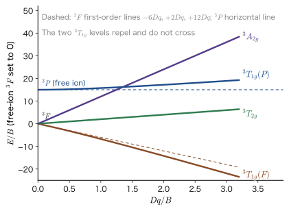
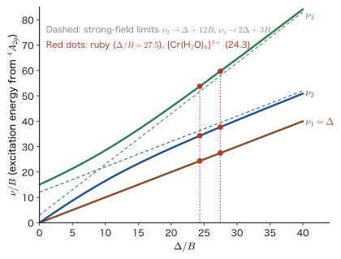
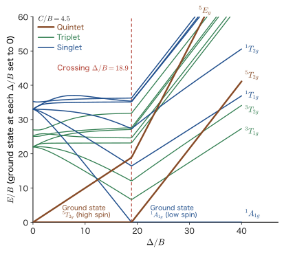

Chapter 47Many-Electron Terms and Tanabe–Sugano Diagrams — Racah Parameters and the Splitting of Multiplets
The one-electron picture predicts that the absorption of a d electron shows up as just one line. Is this really true? In Chapter 44 we derived that, in the electrostatic field of ligands arranged in an octahedron, the 3d orbitals split into a threefold $t_{2g}$ and a twofold $e_g$, separated by $\Delta_{\mathrm o}=10Dq$. If the three 3d electrons of $\mathrm{Cr^{3+}}$ moved independently of one another, just one electron could jump from the lower $t_{2g}$ to the upper $e_g$, and the absorption spectrum should show a single band corresponding to $\Delta_{\mathrm o}$. Real ruby (a red gemstone in which a small amount of $\mathrm{Cr^{3+}}$ replaces the $\mathrm{Al^{3+}}$ of $\mathrm{Al_2O_3}$), however, has two broad absorption bands, one in green light (close to yellow-green; wavelength about 555 nm) and one in blue-violet light (about 405 nm), and in addition a red emission line (694.3 nm) that has a small absorption intensity but is sharp. The three electrons are not independent. They push against one another through Coulomb repulsion, and the magnitude of this repulsion is of the same order as the magnitude of the splitting of the 3d levels by the ligand field (about $10^4\ \mathrm{cm^{-1}}$).
In this chapter we solve for the energy levels of the $d^n$ configuration when electron–electron repulsion and the ligand field are comparable, using only the tools of quantum mechanics (degenerate perturbation theory, diagonalization of matrices, and symmetry). First we count the 45 states of $d^2$ in two ways and confirm that the one-electron picture is not enough. Next we express the energies of the free-ion terms (${}^3\mathrm{F}$, ${}^3\mathrm{P}$, …) in terms of three constants $A,B,C$ (the Racah parameters, introduced in Chapter 34, Section 34.5), and we study how these terms split in an octahedral field from both the weak-ligand-field limit and the strong-ligand-field limit. The diagram that joins the two limits smoothly is the Tanabe–Sugano diagram. With $\Delta_{\mathrm o}/B$ on the horizontal axis and $E/B$ on the vertical axis, we can read from a single diagram both the spectrum of ruby and whether $\mathrm{Fe^{2+}}$ is high spin or low spin. It is a phenomenon that has no counterpart in classical physics and is peculiar to quantum mechanics—the systematic organization of many-electron states in which spin, orbital, and symmetry are intertwined.
- That the 45 states of $d^2$ (15 for $(t_{2g})^2$, 24 for $t_{2g}e_g$, and 6 for $(e_g)^2$) and the count of free-ion terms (21 for ${}^3\mathrm{F}$, 9 for ${}^3\mathrm{P}$, 9 for ${}^1\mathrm{G}$, 5 for ${}^1\mathrm{D}$, and 1 for ${}^1\mathrm{S}$) give the same total of 45; the terms of $d^2$ and $d^3$ (120 states, 8 terms) obtained with the Slater boxes of Chapter 34, and Hund's ground term
- The meaning of the Racah parameters $A=F_0-49F_4$, $B=F_2-5F_4$, $C=35F_4$ and of the term energies of $d^2$ (${}^3\mathrm{F}$: $A-8B$, ${}^3\mathrm{P}$: $A+7B$, ${}^1\mathrm{G}$: $A+4B+2C$, ${}^1\mathrm{D}$: $A-3B+2C$, ${}^1\mathrm{S}$: $A+14B+7C$)
- Finding the splitting of terms in a weak ligand field ($\mathrm{S}\to A_{1g}$, …, $\mathrm{F}\to A_{2g}+T_{1g}+T_{2g}$) with the character formula; the first-order energies of the F term (for $d^3$, ${}^4A_{2g}:-12Dq$, ${}^4T_{2g}:-2Dq$, ${}^4T_{1g}:+6Dq$; for $d^2$ the signs are reversed); in a strong ligand field, $(t_{2g})^2={}^3T_{1g}+{}^1A_{1g}+{}^1E_g+{}^1T_{2g}$ and its energies $A-5B$, $A+B+2C$, $A+10B+5C$; and the correlation diagram that connects the two limits
- The conventions of Tanabe–Sugano diagrams and how to construct them. Deriving $\nu_1=\Delta_{\mathrm o}$, $\nu_{2,3}=\tfrac12\bigl[15B+3\Delta_{\mathrm o}\mp\sqrt{225B^2-18B\Delta_{\mathrm o}+\Delta_{\mathrm o}^2}\bigr]$ from the $2\times2$ matrix $\begin{pmatrix}-15B+6Dq&4Dq\\4Dq&0\end{pmatrix}$ for $d^3$, and finding $B=655\ \mathrm{cm^{-1}}$ from the absorption bands of ruby ($\nu_k$ is the wavenumber measured in $\mathrm{cm^{-1}}$; see the box in Section 47.1.1)
- The meaning of the crossings between high spin and low spin for $d^4$–$d^7$ ($\Delta_{\mathrm o}/B=26.8,\,28.4,\,18.9,\,21.2$ at $C/B=4.5$), and how to read linewidths (sharp lines and broad bands)
- The nephelauxetic effect (electron-cloud expansion) $\beta=B/B_0$ and covalent character, spin–orbit interaction and Kramers degeneracy, and the $R_1$ and $R_2$ lines of ruby (separated by $29\ \mathrm{cm^{-1}}$)
Source notes: This chapter supplements material that is not in the original notes. Related notes: Yasuhide Mochizuki, “Physics Notes: Quantum Mechanics 3,” pp. 50–55, pp. 65–68.
47.1 The One-Electron Picture Is Not Enough — The 45 States of $d^2$
47.1.1 What the one-electron picture predicts and what experiment shows
Let us restate the result obtained in Chapter 44 once more, this time in many-electron language. The 3d shell of a metal ion has $5$ orbitals, and each electron has either up or down spin, so there are $10$ spin orbitals (pairs of an orbital and a spin) in all. In an octahedral ligand field, the five orbitals split into three $t_{2g}$ and two $e_g$ orbitals, so the 10 spin orbitals become the lower $6$ (three orbitals of $t_{2g}$ $\times$ 2 spins) and the upper $4$ (two orbitals of $e_g$ $\times$ 2 spins). Since $\mathrm{Cr^{3+}}$ is $d^3$, if we neglect the electron–electron repulsion, the ground state is the configuration $(t_{2g})^3$, in which the three electrons occupy the three $t_{2g}$ orbitals one each with their spins aligned, and the configuration $(t_{2g})^2(e_g)$, in which one electron has been raised to $e_g$, lies higher by exactly $\Delta=10Dq$. Only a single absorption line should appear, at $\Delta$.
However, experiment (on many $\mathrm{Cr^{3+}}$ compounds, such as ruby, the green emerald, and the purple aqueous solution of $\mathrm{[Cr(H_2O)_6]^{3+}}$) shows two broad absorption bands in the visible region, corresponding to spin-allowed transitions (as we will see later, the theory predicts three, but the third lies in the ultraviolet, tends to overlap with the strong ligand-to-metal charge-transfer absorption, and is often not observed), and in addition shows several sharp lines that are weaker than these. The very existence of two or more spin-allowed bands cannot be explained by the one-electron picture. The key to the explanation is that, in fact, the configuration $(t_{2g})^2(e_g)$ is not a single energy level. This configuration has $\binom{6}{2}\times4=60$ states, within which the two $t_{2g}$ electrons repel each other and also repel the one $e_g$ electron. The magnitude of the repulsion changes with the arrangement of the electrons (which orbital each occupies and with which spin), so the 60 states split into several levels. Even if we restrict ourselves to the states in which three spins are aligned (quartets), this configuration gives rise to two levels (${}^4T_{2g}$ and ${}^4T_{1g}$). Furthermore, a third quartet arises from the configuration $t_{2g}(e_g)^2$. This is the origin of the three spin-allowed absorption bands (two in the visible region and the third in the ultraviolet) (we derive the formulas in Section 47.4).
Notation: Expressing energy as a wavenumber
In spectroscopy, the photon energy $E$ divided by $hc$, that is, the wavenumber $\tilde\nu=E/(hc)$, measured in units of $\mathrm{cm^{-1}}$, is used in place of the energy ($1\ \mathrm{eV}=8065.54\ \mathrm{cm^{-1}}$ and $1\ \mathrm{cm^{-1}}=0.123\,98\ \mathrm{meV}$; the wavenumber is related to the wavelength by $\lambda\,[\mathrm{nm}]=10^7/\tilde\nu\,[\mathrm{cm^{-1}}]$). In this chapter, too, $\Delta$, $B$, $C$, and $Dq$ are all expressed in $\mathrm{cm^{-1}}$. The transition energies from the ground state to the excited states (the positions of the absorption bands) are measured in the same units; strictly speaking they should be written $\tilde\nu_1,\tilde\nu_2,\tilde\nu_3$, but because the formulas become complicated, in this chapter we abbreviate them as $\nu_1,\nu_2,\nu_3$ and write $\tilde\nu$ simply as $\nu$. Therefore the $\nu$ that has units of $\mathrm{cm^{-1}}$ in this chapter is a wavenumber ($\nu\,[\mathrm{cm^{-1}}]=\nu\,[\mathrm{Hz}]/c$, where $c$ is measured in $\mathrm{cm/s}$), not the frequency $\nu\,[\mathrm{Hz}]$ ($E=h\nu$).
Spin also affects the intensity of absorption. The electric dipole operator $\hat{\bm d}=-e_0\hat{\bm r}$, which causes the absorption of light, acts only on the electron's position and does not act on the spin. Therefore a transition in which the total spin does not change between the initial state and the final state ($\Delta S=0$; for example ${}^4A_{2g}\to{}^4T_{2g}$) is spin-allowed and strong, whereas a transition in which it does change (${}^4A_{2g}\to{}^2E_g$) is spin-forbidden and weaker by orders of magnitude (for details, see Chapter 48, Section 48.2). The two broad bands of ruby are spin-allowed transitions, and the sharp red line is the spin-forbidden transition ${}^2E_g\leftrightarrow{}^4A_{2g}$.
47.1.2 Counting the states of $d^2$
To organize the many-electron levels, we first need to count the number of states exactly. If the count does not agree with the total of the degeneracies obtained later when we find the eigenvalues, something has gone wrong somewhere. Let us count for the simplest case, $d^2$.
By the Pauli exclusion principle, two electrons cannot occupy the same spin orbital. The number of ways to choose two of the 10 spin orbitals is $\dbinom{10}{2}=\dfrac{10\cdot9}{2}=45$. Next, in the octahedral field, we divide the 10 into the six of $t_{2g}$ and the four of $e_g$, and classify the choices according to how many are chosen from each:
| Configuration | Ways of choosing | Number of states |
|---|---|---|
| $(t_{2g})^2$ | two of the six in $t_{2g}$: $\dbinom62$ | $15$ |
| $t_{2g}\,e_g$ | one of the six in $t_{2g}$ and one of the four in $e_g$: $6\times4$ | $24$ |
| $(e_g)^2$ | two of the four in $e_g$: $\dbinom42$ | $6$ |
| Total | $45$ | |
Definition 47.1: Multiplet
The set of energy levels into which the states arising from the same one-electron configuration are split by the electron–electron repulsion is called a multiplet. In a free ion, the term (${}^{2S+1}\mathrm{L}$, Chapter 34, Section 34.2) specified by the total orbital angular momentum $L$ and the total spin $S$ is a single level, with degeneracy $(2L+1)(2S+1)$. In an octahedral field, $L$ is replaced by the irreducible representations $A_{1g},A_{2g},E_g,T_{1g},T_{2g}$, and terms are written like ${}^{2S+1}T_{1g}$. The degeneracy is the product of the spin multiplicity $2S+1$ and the dimension of the irreducible representation (1 for $A$, 2 for $E$, 3 for $T$).
Example 47.1: Counting the states of $d^3$
(1) Find the number of states of the $d^3$ configuration, and classify them into the octahedral-field configurations $(t_{2g})^3$, $(t_{2g})^2e_g$, $t_{2g}(e_g)^2$, and $(e_g)^3$. (2) Of the states of $(t_{2g})^3$, how many have all three spins up? Give the name (term) of that state.
Solution. (1) Since we choose three of the 10 spin orbitals, there are $\dbinom{10}{3}=\dfrac{10\cdot9\cdot8}{3\cdot2\cdot1}=120$ ways. By configuration, $(t_{2g})^3$: $\dbinom63=20$; $(t_{2g})^2e_g$: $\dbinom62\times4=15\times4=60$; $t_{2g}(e_g)^2$: $6\times\dbinom42=6\times6=36$; $(e_g)^3$: $\dbinom43=4$. The total is $20+60+36+4=120$, which agrees.
(2) If all three spins are up, the three electrons have no choice but to occupy the three $t_{2g}$ orbitals ($d_{xy},d_{yz},d_{zx}$) one each (two electrons with parallel spins cannot occupy the same orbital). Hence there is $\dbinom33=1$ state. This state is the $M_S=\tfrac32$ component of total spin $S=\tfrac32$; the same level also includes three states with $M_S=\tfrac12,-\tfrac12,-\tfrac32$ (states of $(t_{2g})^3$ in which up and down spins are mixed), and together they form a spin quartet. The orbital part of three electrons with aligned spins is a single determinant in which the three $t_{2g}$ orbitals are occupied one each, and it is completely antisymmetric under the exchange of electrons. Therefore the orbital part is a one-dimensional representation, and it transforms with the sign of the determinant of the $3\times3$ representation matrix of $d_{xy},d_{yz},d_{zx}$ ($+1$ for $C_3$ and $C_2$, $-1$ for $C_4$ and $C_2'$). This corresponds to $A_2$ in the character table (Table 47.3). Hence the term is ${}^4A_{2g}$ (degeneracy $4\times1=4$). This is the ground state of $d^3$ that we will see in Section 47.3.
47.1.3 Two limits — does electron–electron repulsion or the ligand field come first?
The classification in Table 47.1 is the one obtained when we assume that “the ligand field is far stronger than the electron–electron repulsion.” In this limit (the strong-field limit), we first fix the configuration by the one-electron energies ($t_{2g}$: $-4Dq$, $e_g$: $+6Dq$), and the electron–electron repulsion then lifts the degeneracy within each configuration. The zeroth-order energies of the three configurations of $d^2$ are $2\times(-4Dq)=-8Dq$, $(-4+6)Dq=+2Dq$, and $2\times6Dq=+12Dq$, with spacing $10Dq=\Delta$.
Conversely, we can also consider the case in which “the electron–electron repulsion is far stronger than the ligand field.” In this limit (the weak-field limit), the electron–electron repulsion first divides the 45 states into the terms of the free ion (Chapter 34): ${}^3\mathrm{F}$ (21 states), ${}^3\mathrm{P}$ (9), ${}^1\mathrm{G}$ (9), ${}^1\mathrm{D}$ (5), and ${}^1\mathrm{S}$ (1). The total is $21+9+9+5+1=45$, so the same 45 states have been classified in a different way. Next, the ligand field divides each term into irreducible representations of $O_h$. In either limit, what we are ultimately asking about is the energies of the same 45 states.
Intuition: Similar to the relation between the Zeeman effect and the Paschen–Back effect
When two effects are of the same order, the strategy of considering the larger one first and treating the smaller one as a perturbation was already used in Chapter 26, Section 26.5. In the limit where the spin–orbit interaction is stronger than the effect of the magnetic field (weak magnetic field), the atom is classified by $J$ and shows the anomalous Zeeman effect; in the limit where the magnetic field is stronger than the spin–orbit interaction (strong magnetic field), $L$ and $S$ precess separately around the magnetic field, giving the Paschen–Back effect. In the case of the ligand field, the “spin–orbit interaction” corresponds to the electron–electron repulsion, and the “magnetic field” corresponds to the ligand field. To treat an intermediate strength, we need to diagonalize a matrix that belongs to neither limit. Summarizing this in a single diagram gives the Tanabe–Sugano diagram of Section 47.4.
Application: What is the range of $\Delta/B$ for transition-metal complexes?
In octahedral complexes of 3d transition metals, $\Delta$ is about $10\,000$–$30\,000\ \mathrm{cm^{-1}}$ (the energy of visible to near-ultraviolet light, $1\ \mathrm{eV}=8065.5\ \mathrm{cm^{-1}}$), and Racah's $B$, which expresses the magnitude of the electron–electron repulsion, is about $500$–$1000\ \mathrm{cm^{-1}}$ (Section 47.2). The ratio $\Delta/B$ is $10$–$40$, which lies in an intermediate regime where we can say neither “electron–electron repulsion first” nor “ligand field first.” This is the reason an exact diagonalization, neither weak-field nor strong-field, is needed, and it is the practical subject of the ligand field theory in Part VIII.
Let us summarize the flow of this chapter. (1) From the free-ion $d^n$, we construct the terms ${}^{2S+1}\mathrm{L}$ into which it splits under the electron–electron repulsion and write their energies in terms of the Racah parameters $A,B,C$ (Section 47.2). (2) In an octahedral ligand field, we examine into which irreducible representations each term splits and what energies they have, starting from the two limits of the weak field (electron–electron repulsion first) and the strong field (ligand field first), and connect the two with a correlation diagram (Section 47.3). (3) Filling in the region between the two limits by diagonalizing matrices gives the Tanabe–Sugano diagram, from which, using the positions of the absorption bands, $\Delta$ and $B$ can be read off, and the ground state for each $d^n$ (high spin or low spin) is also determined (Section 47.4). (4) Comparing the $B$ obtained in this way with the free-ion value reveals the covalent character (Section 47.5), and including the spin–orbit interaction further explains the fine structure of the sharp red lines of ruby (Section 47.6).
47.2 Free-Ion Terms and the Racah Parameters
The starting point for the weak field is provided by the terms of the free ion (an isolated $d^n$ ion with no ligands). Their derivation and the definition of the Racah parameters were given in Chapter 34. Here we reread the results that we will use repeatedly in this chapter from the standpoint of ligand field theory and organize them. First we confirm the terms of $d^2$ and $d^3$ (the results of the Slater boxes).
47.2.1 $d^2$ and $d^3$ terms — results of Chapter 34
The procedure of counting the microstates of a $d^n$ configuration for each $(M_L,M_S)$ and extracting the terms (Slater boxes, the $M_L$–$M_S$ table) was carried out in Chapter 34 for $d^2$ (Section 34.3.4) and for $d^3$ and $d^5$ (Section 34.3.5). In this chapter we use only the results. The 45 states of $d^2$ split into five terms,
\begin{equation} d^2:\quad 45={}^3\mathrm{F}\,(21)+{}^3\mathrm{P}\,(9)+{}^1\mathrm{G}\,(9)+{}^1\mathrm{D}\,(5)+{}^1\mathrm{S}\,(1) \label{eq:47-d2terms} \end{equation}and the 120 states of $d^3$ split into eight terms (${}^2\mathrm{D}$ appears twice):
\begin{equation} d^3:\quad 120={}^4\mathrm{F}\,(28)+{}^4\mathrm{P}\,(12)+{}^2\mathrm{H}\,(22)+{}^2\mathrm{G}\,(18)+{}^2\mathrm{F}\,(14)+2\times{}^2\mathrm{D}\,(10)+{}^2\mathrm{P}\,(6) \label{eq:47-d3terms} \end{equation}The number in parentheses is the degeneracy $(2L+1)(2S+1)$. For the terms of two equivalent electrons (two electrons in the same subshell), $L+S$ is even (${}^3\mathrm{F}$: $3+1$, ${}^1\mathrm{G}$: $4+0$, …) because, when the two electrons are exchanged, the orbital part acquires the sign $(-1)^L$ and the spin part the sign $(-1)^{S+1}$, and their product must be antisymmetric ($-1$). Figure 47.2 puts both $M_L$–$M_S$ tables together on one sheet. If we read the numbers in the cells from left to right and count the colored squares one by one, Eqs. \eqref{eq:47-d2terms} and \eqref{eq:47-d3terms} are reproduced.
Example 47.2: Total number of states of the $d^3$ terms
Find the number of states $(2L+1)(2S+1)$ of the $d^3$ terms ${}^4\mathrm{F}$, ${}^4\mathrm{P}$, ${}^2\mathrm{H}$, ${}^2\mathrm{G}$, ${}^2\mathrm{F}$, ${}^2\mathrm{D}$ (two of them), and ${}^2\mathrm{P}$, and verify that the total is 120. Also reproduce from these terms the total of 50 in the $M_S=\tfrac12$ row and the total of 10 in the $M_S=\tfrac32$ row.
Solution. ${}^4\mathrm{F}$: $7\times4=28$, ${}^4\mathrm{P}$: $3\times4=12$, ${}^2\mathrm{H}$: $11\times2=22$, ${}^2\mathrm{G}$: $9\times2=18$, ${}^2\mathrm{F}$: $7\times2=14$, ${}^2\mathrm{D}$: $5\times2=10$ (20 for the two), ${}^2\mathrm{P}$: $3\times2=6$. The total is $28+12+22+18+14+20+6=120=\dbinom{10}{3}$. Only the quartets contain states with $M_S=\tfrac32$: the seven states of ${}^4\mathrm{F}$ and the three of ${}^4\mathrm{P}$ give a total of $10$, which agrees with $\dbinom53=10$. The states with $M_S=\tfrac12$ consist of the $7+3=10$ states of the quartets and the $11+9+7+10+3=40$ states of the doublets ${}^2\mathrm{H}$ (11), ${}^2\mathrm{G}$ (9), ${}^2\mathrm{F}$ (7), ${}^2\mathrm{D}$ ($5\times2$), and ${}^2\mathrm{P}$ (3); the total is $50=\dbinom52\times5$, in agreement.
47.2.2 Hund's rules and the ground term
The term of lowest energy (the ground term) is determined by Hund's rules (Chapter 34, Section 34.6): (1) The term with the largest total spin $S$ is the lowest. (2) If $S$ is the same, the term with the largest $L$ is the lowest. Table 47.2 shows the result of applying these rules to $d^n$. For example, for $d^3$ the largest spin $S=\tfrac32$ occurs among the terms ${}^4\mathrm{F}$ and ${}^4\mathrm{P}$, and the one with the larger $L$, ${}^4\mathrm{F}$, is the ground term. By the electron–hole relationship (Chapter 34, Section 34.3.6), $d^n$ and $d^{10-n}$ have the same terms.
| Configuration | Ground term | $S$ | $L$ | Examples |
|---|---|---|---|---|
| $d^1$ | ${}^2\mathrm{D}$ | $\tfrac12$ | 2 | $\mathrm{Ti^{3+}}$ |
| $d^2$ | ${}^3\mathrm{F}$ | 1 | 3 | $\mathrm{V^{3+}}$ |
| $d^3$ | ${}^4\mathrm{F}$ | $\tfrac32$ | 3 | $\mathrm{Cr^{3+}}$, $\mathrm{V^{2+}}$ |
| $d^4$ | ${}^5\mathrm{D}$ | 2 | 2 | $\mathrm{Cr^{2+}}$, $\mathrm{Mn^{3+}}$ |
| $d^5$ | ${}^6\mathrm{S}$ | $\tfrac52$ | 0 | $\mathrm{Mn^{2+}}$, $\mathrm{Fe^{3+}}$ |
| $d^6$ | ${}^5\mathrm{D}$ | 2 | 2 | $\mathrm{Fe^{2+}}$, $\mathrm{Co^{3+}}$ |
| $d^7$ | ${}^4\mathrm{F}$ | $\tfrac32$ | 3 | $\mathrm{Co^{2+}}$ |
| $d^8$ | ${}^3\mathrm{F}$ | 1 | 3 | $\mathrm{Ni^{2+}}$ |
| $d^9$ | ${}^2\mathrm{D}$ | $\tfrac12$ | 2 | $\mathrm{Cu^{2+}}$ |
| $d^{10}$ | ${}^1\mathrm{S}$ | 0 | 0 | $\mathrm{Zn^{2+}}$ |
For ions whose ground term is ${}^{2S+1}\mathrm{F}$ ($d^2$, $d^3$, $d^7$, $d^8$), the term ${}^{2S+1}\mathrm{P}$ with the same $S$ as the ground term lies $15B$ higher, and the ligand field mixes these two terms of the same spin (it does not mix terms with different $S$; Section 47.3.2). This is why, for $d^2$, $d^3$, $d^7$, and $d^8$, the Tanabe–Sugano diagram reduces to a particularly simple problem of a $2\times2$ matrix. For ions whose ground term is ${}^5\mathrm{D}$ ($d^4$, $d^6$) or ${}^6\mathrm{S}$ ($d^5$), there is only one term with the same $S$, so there is no such mixing.
47.2.3 Electron–electron repulsion energy — Racah parameters $A$, $B$, and $C$
The energy of a term is determined by the matrix elements of $1/r_{12}$ and is a linear combination, with integer coefficients, of the Slater integrals $F^k$ ($k=0,2,4$) (Chapter 34, Section 34.5; $F_2=F^2/49$ and $F_4=F^4/441$ are the Condon–Shortley normalization). Using the Racah parameters of Chapter 34, Definition 34.5
\begin{equation} A=F_0-49F_4,\qquad B=F_2-5F_4,\qquad C=35F_4 \label{eq:47-racah} \end{equation}(equivalently, $F_4=C/35$, $F_2=B+C/7$, $F_0=A+\tfrac75C$), the energies of the five terms of $d^2$ are as follows (the same result as Chapter 34, Table 34.6).
Formula 47.1: Term energies of $d^2$
\begin{equation} \begin{aligned} E({}^3\mathrm{F})&=A-8B, & E({}^3\mathrm{P})&=A+7B,\\ E({}^1\mathrm{G})&=A+4B+2C, & E({}^1\mathrm{D})&=A-3B+2C,\\ E({}^1\mathrm{S})&=A+14B+7C && \end{aligned} \label{eq:47-d2energy} \end{equation}By Hund's rules, ${}^3\mathrm{F}$ is the lowest. Measured from ${}^3\mathrm{F}$, the excitation energies are ${}^3\mathrm{P}$: $15B$, ${}^1\mathrm{D}$: $5B+2C$, ${}^1\mathrm{G}$: $12B+2C$, ${}^1\mathrm{S}$: $22B+7C$.
Let us check this result by a direct method, different from that of Chapter 34. Each of the five terms contains exactly one state with $M_L=0$ and $M_S=0$, so if we construct the energy matrix in this $(M_L,M_S)=(0,0)$ subspace (five-dimensional) and diagonalize it, the energies of all five terms come out at once.
Derivation: Diagonalizing the $5\times5$ matrix for $(M_L,M_S)=(0,0)$
As the basis we take the determinants $\ket{m\!\uparrow,-m\!\downarrow}$ ($m=2,1,0,-1,-2$), in which the spin-up electron is in orbital $m$ and the spin-down electron is in orbital $-m$. If we construct the matrix elements of $1/r_{12}$ from the Gaunt coefficients (the values are combinations of integers determined solely by integrals of spherical harmonics), the energy matrix takes the form $A\,I+B\,M_B+C\,M_C$ ($I$ is the identity matrix; rows and columns are in the order $m=2,1,0,-1,-2$):
$$ M_B=\begin{pmatrix}4&-6&4&0&0\\-6&1&-1&6&0\\4&-1&4&-1&4\\0&6&-1&1&-6\\0&0&4&-6&4\end{pmatrix},\qquad M_C=\begin{pmatrix}2&-1&1&-1&2\\-1&2&-1&2&-1\\1&-1&3&-1&1\\-1&2&-1&2&-1\\2&-1&1&-1&2\end{pmatrix} $$We show two examples of computing a matrix element. The diagonal element $\mel{m\!\uparrow,-m\!\downarrow}{1/r_{12}}{m\!\uparrow,-m\!\downarrow}$ has no exchange term because the spins point in opposite directions, so it consists of the Coulomb integral alone and can be written as $\sum_kc^k(2,m)\,c^k(2,-m)\,F^k$ ($k=0,2,4$). Here $c^k(2,m)=\sqrt{4\pi/(2k+1)}\int Y_2^{m*}Y_k^0Y_2^m\,\dd\Omega$ is the number for the angular part, determined by the Gaunt coefficients, and $F^k=D_kF_k$ ($D_0=1$, $D_2=49$, $D_4=441$). For $d$ orbitals, $c^0=1$, $c^2(2,\pm2)=-\tfrac27$, $c^4(2,\pm2)=\tfrac1{21}$, and $c^2(2,0)=c^4(2,0)=\tfrac27$, so
$$ \begin{aligned} \ket{2\!\uparrow,-2\!\downarrow}&:\ F_0+\Bigl(-\tfrac27\Bigr)^2 49F_2+\Bigl(\tfrac1{21}\Bigr)^2 441F_4=F_0+4F_2+F_4,\\ \ket{0\!\uparrow,0\!\downarrow}&:\ F_0+\Bigl(\tfrac27\Bigr)^2 49F_2+\Bigl(\tfrac27\Bigr)^2 441F_4=F_0+4F_2+36F_4 \end{aligned} $$Substituting the inverse relations $F_4=C/35$, $F_2=B+C/7$, $F_0=A+\tfrac75C$, the former becomes $A+4B+2C$ and the latter $A+4B+3C$. These agree, respectively, with the diagonal elements $4$, $4$ of $M_B$ and $2$, $3$ of $M_C$ (at the positions $m=2$ and $m=0$). The off-diagonal elements can be computed similarly (from Gaunt integrals of exchange type).
This matrix is invariant under the interchange $m\to-m$, so it splits into the even combinations $e_2=(\ket{2}+\ket{-2})/\sqrt2$, $e_1=(\ket{1}+\ket{-1})/\sqrt2$, $e_0=\ket{0}$ and the odd combinations $o_2=(\ket{2}-\ket{-2})/\sqrt2$, $o_1=(\ket{1}-\ket{-1})/\sqrt2$, giving two blocks, of sizes $3\times3$ and $2\times2$ (we omit $A$ below). The odd block is
$$ \begin{pmatrix}4B&-6B\\-6B&-5B\end{pmatrix} $$and its eigenvalues are $\lambda=\tfrac12(-B)\pm\sqrt{(\tfrac92B)^2+(6B)^2}=-\tfrac12B\pm\tfrac{15}2B$, that is, $\lambda=7B$ and $-8B$. These are ${}^3\mathrm{P}$ and ${}^3\mathrm{F}$ ($A+7B$, $A-8B$). The even block, in the basis $(e_2,e_1,e_0)$, is
$$ \begin{pmatrix}4B+4C&-6B-2C&\sqrt2\,(4B+C)\\-6B-2C&7B+4C&-\sqrt2\,(B+C)\\\sqrt2\,(4B+C)&-\sqrt2\,(B+C)&4B+3C\end{pmatrix} $$and its characteristic polynomial factorizes as $(\lambda-4B-2C)(\lambda+3B-2C)(\lambda-14B-7C)$. The eigenvalues are $4B+2C$, $-3B+2C$, $14B+7C$, which agree with the energies of ${}^1\mathrm{G}$, ${}^1\mathrm{D}$, ${}^1\mathrm{S}$ (after adding $A$). The trace also agrees: it is $5A+14B+11C$ for the matrix, and the sum of the term energies is $5A+(-8+7+4-3+14)B+(2+2+7)C=5A+14B+11C$.
∎
The energies of the $d^3$ terms can be obtained by the same method (the formulas of Chapter 34): ${}^4\mathrm{F}$: $3A-15B$, ${}^4\mathrm{P}$: $3A$, ${}^2\mathrm{G}$: $3A-11B+3C$, ${}^2\mathrm{H}$ and ${}^2\mathrm{P}$: $3A-6B+3C$, ${}^2\mathrm{F}$: $3A+9B+3C$, and the two ${}^2\mathrm{D}$ terms: $3A+5B+5C\pm\sqrt{193B^2+8BC+4C^2}$. Note that the difference between ${}^4\mathrm{F}$ and ${}^4\mathrm{P}$ is $15B$ and does not contain $C$, and that the two ${}^2\mathrm{D}$ terms mix with each other, so that a square root appears. $d^8$ is the hole counterpart of $d^2$, and $d^7$ that of $d^3$; the spacings between terms are the same (however, the coefficient of $A$ changes with the number of pairs of electrons, $N(N-1)/2$).
Intuition: The meaning of $B$ and $C$
$A$ is mainly the spherically symmetric average repulsion ($F_0$), a constant that is added by the same amount to all terms in the configuration (the coefficient of $A$ is the number of electron pairs, $N(N-1)/2$), so it does not affect the spacings between terms. The spacings are determined by the combinations $B=F_2-5F_4$ and $C=35F_4$ of the non-spherical part of the repulsion ($F_2$, $F_4$). In Eq. \eqref{eq:47-d2energy}, the spacing between ${}^3\mathrm{F}$ and ${}^3\mathrm{P}$ (the same spin triplet) is just $15B$ and does not contain $C$. The spacing between terms of the same spin multiplicity is determined by $B$. On the other hand, the spacings between terms with different spin alignment (from ${}^3\mathrm{F}$ to ${}^1\mathrm{D}$ and ${}^1\mathrm{G}$) contain $2C$. $C$ is the quantity that affects the spacing between spin singlets and triplets. Both $B$ and $C$ express differences in repulsion arising from the deviation of the charge distribution of the $d$ electrons from spherical symmetry.
Application: $B$ and $C/B$ of free ions, and the spin–orbit interaction
For free 3d transition-metal ions, $B$ is about $860\ \mathrm{cm^{-1}}$ for $\mathrm{V^{3+}}$, about $920\ \mathrm{cm^{-1}}$ for $\mathrm{Cr^{3+}}$, about $960\ \mathrm{cm^{-1}}$ for $\mathrm{Mn^{2+}}$, and about $1040\ \mathrm{cm^{-1}}$ for $\mathrm{Ni^{2+}}$; it becomes larger the farther to the right we go in the periodic table and the larger the charge (these are values from spectroscopic data; since $1\ \mathrm{eV}=8065.5\ \mathrm{cm^{-1}}$, $B\approx0.1$ eV). The ratio $C/B$ is about 3.5–4.5, and “$C\approx4B$” is used as an empirical law (in Chapter 34, Example 34.13, we showed that $C/B\approx4$ even for hydrogen-like 3d orbitals). The one-electron coupling constant $\zeta_{3d}$ of the spin–orbit interaction (Chapter 26, Chapter 34, Section 34.4) is about $100$–$800\ \mathrm{cm^{-1}}$ (about $270\ \mathrm{cm^{-1}}$ for $\mathrm{Cr^{3+}}$), more than an order of magnitude smaller than the term spacing $15B\approx10^4\ \mathrm{cm^{-1}}$ or $\Delta$ (its ratio to $B$ is about 0.3 for $\mathrm{Cr^{3+}}$ and about 0.6 for $\mathrm{Ni^{2+}}$, so for 3d ions toward the right of the periodic table it can no longer be ignored). Therefore, as long as we are considering the positions of terms for an early 3d ion such as $\mathrm{Cr^{3+}}$, the fine structure ${}^{2S+1}\mathrm{L}_J$ due to the spin–orbit interaction can be neglected. The spin–orbit interaction becomes essential in Section 47.6, which discusses the fine structure of the sharp $R$ lines of ruby.
Example 47.3: Excitation energies of the free $\mathrm{V^{3+}}$ ($d^2$) ion
For the free $\mathrm{V^{3+}}$ ion, suppose $B=860\ \mathrm{cm^{-1}}$ and $C=4B$. Find the excitation energies from the ground term ${}^3\mathrm{F}$ to ${}^3\mathrm{P}$, ${}^1\mathrm{D}$, ${}^1\mathrm{G}$, and ${}^1\mathrm{S}$ in $\mathrm{cm^{-1}}$ and in eV, and also as wavelengths of light. ($1\ \mathrm{eV}=8065.54\ \mathrm{cm^{-1}}$, wavelength $\lambda\,[\mathrm{nm}]=10^7/\nu\,[\mathrm{cm^{-1}}]$. These values are assumed values, not measured values.)
Solution. $C=4B=3440\ \mathrm{cm^{-1}}$. From Eq. \eqref{eq:47-d2energy}, ${}^3\mathrm{P}$: $(A+7B)-(A-8B)=15B=12\,900\ \mathrm{cm^{-1}}$, ${}^1\mathrm{D}$: $(A-3B+2C)-(A-8B)=5B+2C=13B=11\,180\ \mathrm{cm^{-1}}$, ${}^1\mathrm{G}$: $(A+4B+2C)-(A-8B)=12B+2C=20B=17\,200\ \mathrm{cm^{-1}}$, ${}^1\mathrm{S}$: $(A+14B+7C)-(A-8B)=22B+7C=50B=43\,000\ \mathrm{cm^{-1}}$. Converting to eV gives $12\,900/8065.54=1.599$, $11\,180/8065.54=1.386$, $17\,200/8065.54=2.133$, $43\,000/8065.54=5.331\ \mathrm{eV}$. The wavelengths are $775\ \mathrm{nm}$, $894\ \mathrm{nm}$, $581\ \mathrm{nm}$, and $233\ \mathrm{nm}$. The lowest excitation is ${}^1\mathrm{D}$, which is lower than ${}^3\mathrm{P}$ (this is for $C/B=4$. The ${}^1\mathrm{D}$ energy $5B+2C$ and the ${}^3\mathrm{P}$ energy $15B$ become equal at $C/B=5$, and for $C/B\lt5$, ${}^1\mathrm{D}$ is lower. Among excited terms, Hund's rule that the term with the larger spin is lower does not necessarily hold). $A$ did not appear in the result.
47.3 Splitting of Terms by the Ligand Field — Weak Field, Strong Field, and Correlation Diagrams
47.3.1 Weak field: The terms of the free ion split into octahedral irreducible representations
Suppose that the ligand field is weaker than the electron–electron repulsion ($\Delta\ll B$). We first construct the terms of the free ion, and then add the ligand field as a perturbation. The ligand field $\hat{V}_{\mathrm{cf}}=\sum_i v_{\mathrm{cf}}(\bm{r}_i)$ is a function of the electrons' positions only and does not act on the spin, so the spin quantum number $S$ is conserved, and the ${}^{2S+1}$ part of the term remains as it is. What changes is the orbital part. In the free ion, the $2L+1$ orbital states of a single term were degenerate because of the rotational symmetry associated with the total angular momentum $L$. In an octahedral field, the rotational symmetry is reduced to just the 24 rotations of the octahedral rotation group $O$ (the identity, eight $C_3$, three $C_2$, six $C_4$, and six $C_2'$), so the $2L+1$-fold degeneracy splits into the irreducible representations $A_1,A_2,E,T_1,T_2$ of $O$. We carry this out with the tools of group theory (characters) from Chapter 45.
The states of $d$ electrons are even (they do not change sign under inversion), so the irreducible representations of $O_h$ carry the subscript $g$. Below, the character table of $O$ and the $g$ representations of $O_h$ are treated as the same.
Math Tool: Characters of rotations and the reduction formula
The $2L+1$ states $\ket{L,M}$ of angular momentum $L$ acquire the phase $e^{-iM\alpha}$ when they are rotated about the $z$ axis by an angle $\alpha$. Therefore the trace (character) of the representation matrix of the rotation is
\begin{equation} \chi_L(\alpha)=\sum_{M=-L}^{L}e^{iM\alpha}=\frac{\sin\bigl[(2L+1)\alpha/2\bigr]}{\sin(\alpha/2)} \label{eq:47-chiL} \end{equation}The sum is a geometric series (for $\alpha=0$ it equals $2L+1$). For a rotation about any axis, the character is the same as long as the rotation angle $\alpha$ is the same. The classes of $O$ are $C_3$: $\alpha=2\pi/3$, $C_2$ and $C_2'$: $\alpha=\pi$, and $C_4$: $\alpha=\pi/2$. The number of times an irreducible representation $\Gamma$ is contained in $L$ is given by the reduction formula (orthogonality relation of characters)
\begin{equation} n_\Gamma=\frac{1}{24}\sum_{c}h_c\,\chi_L(c)\,\chi_\Gamma(c) \label{eq:47-reduce} \end{equation}where $h_c$ is the number of elements in class $c$ and $24$ is the order of the group. ($\Gamma$ here is a symbol for an irreducible representation, and is a different thing from the $\Gamma$ point, the origin of wavenumber space in the band theory of solids.) A detailed explanation of groups, characters, and reduction is given in Chapter 45.
| $E$ | $8C_3$ | $3C_2$ | $6C_4$ | $6C_2'$ | |
|---|---|---|---|---|---|
| $A_1$ | 1 | 1 | 1 | 1 | 1 |
| $A_2$ | 1 | 1 | 1 | $-1$ | $-1$ |
| $E$ | 2 | $-1$ | 2 | 0 | 0 |
| $T_1$ | 3 | 0 | $-1$ | 1 | $-1$ |
| $T_2$ | 3 | 0 | $-1$ | $-1$ | 1 |
| $\chi_0$ (S) | 1 | 1 | 1 | 1 | 1 |
| $\chi_1$ (P) | 3 | 0 | $-1$ | 1 | $-1$ |
| $\chi_2$ (D) | 5 | $-1$ | 1 | $-1$ | 1 |
| $\chi_3$ (F) | 7 | 1 | $-1$ | $-1$ | $-1$ |
| $\chi_4$ (G) | 9 | 0 | 1 | 1 | 1 |
| $\chi_5$ (H) | 11 | $-1$ | $-1$ | 1 | $-1$ |
| $\chi_6$ (I) | 13 | 1 | 1 | $-1$ | 1 |
For example, for $L=2$ (the D term), $\chi_2=(5,-1,1,-1,1)$, which equals the sum of the character $(2,-1,2,0,0)$ of $E$ and the character $(3,0,-1,-1,1)$ of $T_2$. That is, the D term splits into $E+T_2$. This is the same result as the splitting of the $d$ orbitals into $e_g$ and $t_{2g}$ (Chapter 44). Table 47.4 gives the result of evaluating Eq. \eqref{eq:47-reduce} for general $L$.
| Term | $L$ | Splitting | Sum of dimensions |
|---|---|---|---|
| S | 0 | $A_1$ | 1 |
| P | 1 | $T_1$ | 3 |
| D | 2 | $E+T_2$ | $2+3=5$ |
| F | 3 | $A_2+T_1+T_2$ | $1+3+3=7$ |
| G | 4 | $A_1+E+T_1+T_2$ | $1+2+3+3=9$ |
| H | 5 | $E+2T_1+T_2$ | $2+6+3=11$ |
| I | 6 | $A_1+A_2+E+T_1+2T_2$ | $1+1+2+3+6=13$ |
Example 47.4: Finding the splitting of the F and G terms with the character formula
Using the reduction formula, Eq. \eqref{eq:47-reduce}, find (1) the number of times $A_2$, $T_1$, and $E$ are contained in the F term ($L=3$), and (2) the number of times $A_1$, $E$, and $T_2$ are contained in the G term ($L=4$).
Solution. $\chi_3=(7,1,-1,-1,-1)$, $h=(1,8,3,6,6)$. (1) $A_2$: $\frac1{24}[1\cdot7\cdot1+8\cdot1\cdot1+3\cdot(-1)\cdot1+6\cdot(-1)\cdot(-1)+6\cdot(-1)\cdot(-1)]=\frac{7+8-3+6+6}{24}=1$. $T_1$: since $\chi_{T_1}=(3,0,-1,1,-1)$, $\frac1{24}[21+0+3-6+6]=1$. $E$: since $\chi_E=(2,-1,2,0,0)$, $\frac1{24}[14-8-6+0+0]=0$. Hence F contains $A_2$ once and $T_1$ once, and does not contain $E$ ($T_2$ is contained once, since $\frac1{24}[21+0+3+6-6]=1$). The total is $1+3+3=7$. (2) $\chi_4=(9,0,1,1,1)$. $A_1$: $\frac1{24}[9+0+3+6+6]=1$. $E$: $\frac1{24}[18-0+6+0+0]=1$. $T_2$: since $\chi_{T_2}=(3,0,-1,-1,1)$, $\frac1{24}[27+0-3-6+6]=1$. ($T_1$: $\frac1{24}[27+0-3+6-6]=1$, $A_2$: $\frac1{24}[9+0+3-6-6]=0$.) Therefore $\mathrm{G}\to A_1+E+T_1+T_2$, and the dimension is $1+2+3+3=9$, which agrees with $2L+1$.
With the spin multiplicity attached, the free-ion terms of $d^2$ and $d^3$ split into octahedral levels as follows:
\begin{equation} \begin{aligned} d^2:\ &{}^3\mathrm{F}\to{}^3A_{2g}+{}^3T_{1g}+{}^3T_{2g},\quad {}^3\mathrm{P}\to{}^3T_{1g},\quad {}^1\mathrm{G}\to{}^1A_{1g}+{}^1E_g+{}^1T_{1g}+{}^1T_{2g},\\ &{}^1\mathrm{D}\to{}^1E_g+{}^1T_{2g},\quad {}^1\mathrm{S}\to{}^1A_{1g},\\ d^3:\ &{}^4\mathrm{F}\to{}^4A_{2g}+{}^4T_{1g}+{}^4T_{2g},\quad {}^4\mathrm{P}\to{}^4T_{1g},\quad {}^2\mathrm{H}\to{}^2E_g+2\,{}^2T_{1g}+{}^2T_{2g},\\ &{}^2\mathrm{G}\to{}^2A_{1g}+{}^2E_g+{}^2T_{1g}+{}^2T_{2g},\quad {}^2\mathrm{F}\to{}^2A_{2g}+{}^2T_{1g}+{}^2T_{2g},\\ &{}^2\mathrm{D}\ (\times2)\to2\,({}^2E_g+{}^2T_{2g}),\quad {}^2\mathrm{P}\to{}^2T_{1g} \end{aligned} \label{eq:47-split} \end{equation}The five terms of $d^2$ give $3+1+4+2+1=11$ levels. The eight terms of $d^3$ give $3+1=4$ quartet levels and doublet levels: four from ${}^2\mathrm{H}$, four from ${}^2\mathrm{G}$, three from ${}^2\mathrm{F}$, two each from the two ${}^2\mathrm{D}$ terms (four in all), and one from ${}^2\mathrm{P}$, for a total of $4+4+3+4+1=16$; altogether there are 20 levels (breakdown of the doublets: four ${}^2E_g$, five ${}^2T_{1g}$, five ${}^2T_{2g}$, and one each of ${}^2A_{1g}$ and ${}^2A_{2g}$). The sum of the degeneracies is $45$ for $d^2$ (the triplets give $3\times(1+3+3+3)=30$ and the singlets give $(1+2+3+3)+(2+3)+1=15$) and $120$ for $d^3$ (the quartets give $4\times(1+3+3+3)=40$ and the doublets give $2\times(4\cdot2+5\cdot3+5\cdot3+1+1)=80$), which agrees with the number of states.
47.3.2 First-order energies of the splitting of the F term — $-12Dq$, $-2Dq$, $+6Dq$
Let us find the first-order shift of the energy of each level that has split into irreducible representations. The operator of the ligand field, $\hat{V}_{\mathrm{cf}}=\sum_iv_{\mathrm{cf}}(\bm{r}_i)$, is a sum of one-electron operators, and the one-electron energies are $t_{2g}$: $-4Dq$ and $e_g$: $+6Dq$ (Chapter 44). Therefore a state belonging to a given electron configuration $(t_{2g})^a(e_g)^b$ has the first-order energy $(-4a+6b)\,Dq$.
Derivation: Splitting of ${}^4\mathrm{F}$ of $d^3$ (center-of-gravity rule and correspondence of configurations)
(i) ${}^4A_{2g}$: In Eq. \eqref{eq:47-split}, the quartet $A_{2g}$ is contained only in ${}^4\mathrm{F}$, while the quartet $A_{2g}$ arising from the strong-field configurations of $d^3$ ($(t_{2g})^3$, $(t_{2g})^2e_g$, $t_{2g}e_g^2$, $e_g^3$) is just one, from $(t_{2g})^3$ (the state in which the three spins are aligned and one electron occupies each of the three $t_{2g}$ orbitals). Since the weak-field ${}^4A_{2g}$ and the strong-field ${}^4A_{2g}$ are the same unique state, its energy is $3\times(-4Dq)=-12Dq$. (ii) ${}^4T_{2g}$: The quartet $T_{2g}$ occurs, in the weak field, only in ${}^4\mathrm{F}$, and, in the strong field, only in $(t_{2g})^2e_g$. Therefore this too is a unique state, and its energy is $2\times(-4Dq)+6Dq=-2Dq$. (iii) ${}^4T_{1g}$: The ${}^4T_{1g}$ of ${}^4\mathrm{F}$ mixes with the ${}^4T_{1g}$ of ${}^4\mathrm{P}$, so the configuration cannot be fixed for it alone. We therefore use the center-of-gravity rule (also called the barycenter rule). Since the potential of an octahedral ligand field has cubic symmetry, the components that act on a $d$ electron ($l=2$) are only a spherically symmetric constant ($k=0$) and the $k=4$ multipole (Chapter 44). The constant with $k=0$ has been eliminated by the convention of taking the average of the $t_{2g}$ and $e_g$ energies to be 0 ($3\times(-4Dq)+2\times6Dq=0$). For a spherical tensor operator $T^k_q$ of rank $k\ge1$, the trace $\sum_M\mel{L\,M}{T^k_q}{L\,M}$ over the $2L+1$ states of a single term $L$ must be a quantity that does not change under rotation (a scalar), and since a tensor with $k\ge1$ has no scalar component, the trace vanishes by the Wigner–Eckart theorem (the fourfold spin degeneracy of ${}^4\mathrm{F}$ is common to all the states). Therefore the first-order shifts of the seven orbital states of ${}^4\mathrm{F}$ have a degeneracy-weighted average of zero, which gives
$$ 1\cdot(-12Dq)+3\cdot(-2Dq)+3\cdot x=0\quad\Longrightarrow\quad x=+6Dq $$where $x$ is the first-order shift of the ${}^4T_{1g}$ belonging to ${}^4\mathrm{F}$ (excluding its mixing with ${}^4\mathrm{P}$).
∎
For $d^2$, ${}^3A_{2g}$ comes only from the configuration $(e_g)^2$ ($2\times6Dq=+12Dq$), and ${}^3T_{2g}$ comes only from the configuration $t_{2g}e_g$ ($-4Dq+6Dq=+2Dq$), so by the same argument ${}^3T_{1g}(\mathrm{F})$ satisfies $12+3\cdot2+3x=0$, whence $x=-6Dq$. To summarize, the first-order shifts of the ${}^{2S+1}\mathrm{F}$ term (measured from the free-ion F) are as follows (a diagram in which these slopes are drawn as functions of $Dq$, that is, a diagram with $Dq/B$ on the horizontal axis and, on the vertical axis, the energies of the weak-field levels measured from the free-ion term, is called an Orgel diagram; Figure 47.3).
| Level | $d^3$, $d^8$ (octahedral), $d^2$, $d^7$ (tetrahedral) | $d^2$, $d^7$ (octahedral), $d^3$, $d^8$ (tetrahedral) |
|---|---|---|
| $A_{2g}$ | $-12Dq$ | $+12Dq$ |
| $T_{2g}$ | $-2Dq$ | $+2Dq$ |
| $T_{1g}$ (from F) | $+6Dq$ | $-6Dq$ |
The right column of this table gives the values for $d^2$ in an octahedral field (${}^3A_{2g}$: $+12Dq$, ${}^3T_{2g}$: $+2Dq$, ${}^3T_{1g}$: $-6Dq$). The two columns have opposite signs because of the relation between electrons and holes. The holes of $d^n$ ($d^{10-n}$) have the same terms as electrons whose one-electron ligand field energies have the opposite sign ($e_g$ below and $t_{2g}$ above, or, equivalently, $Dq\to-Dq$). Therefore the octahedral field for $d^8$ (the holes of $d^2$) is that for $d^2$ with the sign reversed, that is, it gives the same pattern as the octahedral field for $d^3$ (${}^3A_{2g}$ lowest). Also, in a tetrahedral field (Chapter 44, Section 44.5), the order of the levels is reversed ($e$ below and $t_2$ above) and the spacing is $4/9$ times that of the octahedral field ($\Delta_t=\tfrac49\Delta_o$), so octahedral $d^n$ and tetrahedral $d^{10-n}$ show the same pattern, and octahedral $d^3$ and tetrahedral $d^2$ also show the same pattern.
What remains is the mixing of ${}^4T_{1g}(\mathrm{F})$ and ${}^4T_{1g}(\mathrm{P})$. Since ${}^4\mathrm{P}$ ($L=1$) has $L\lt2$, the diagonal element of the $k=4$ ligand field is 0 (between states with $L=1$, the matrix elements of a tensor of rank 4 vanish). However, ${}^4\mathrm{F}$ ($L=3$) and ${}^4\mathrm{P}$ ($L=1$) differ in $L$ by 2, and $k=4\ge|3-1|$, so the off-diagonal element is not zero. Its magnitude is determined from the correspondence with the strong-field configurations, as follows.
Derivation: The magnitude $4Dq$ of the mixing of ${}^4T_{1g}(\mathrm{F})$ and ${}^4T_{1g}(\mathrm{P})$
Considering only the ligand field (switching off the electron–electron repulsion), we diagonalize $\hat{V}_{\mathrm{cf}}$ in the two-dimensional space of $T_{1g}$ with $S=\tfrac32$. In terms of the strong-field configurations, there are two quartet $T_{1g}$ states belonging to this space, $(t_{2g})^2e_g$ (the $T_{1g}$ of ${}^3T_{1g}\otimes E_g=T_{1g}+T_{2g}$) and $t_{2g}(e_g)^2$ ($T_{2g}\otimes{}^3A_{2g}=T_{1g}$), and their first-order energies are $-2Dq$ and $-4Dq+12Dq=+8Dq$. Therefore, the matrix of $\hat{V}_{\mathrm{cf}}$ written in the weak-field basis $({}^4T_{1g}(\mathrm{F}),{}^4T_{1g}(\mathrm{P}))$ is
$$ \begin{pmatrix}6Dq&y\\y&0\end{pmatrix}\qquad(\text{the diagonal elements are the previously found }+6Dq\text{ and, for }{}^4\mathrm{P}\text{, }0) $$and its eigenvalues must be $-2Dq$ and $+8Dq$. The trace agrees: $6Dq=-2Dq+8Dq$. The determinant gives $0\cdot6Dq-y^2=(-2Dq)(8Dq)=-16(Dq)^2$, so $y^2=16(Dq)^2$ and $y=\pm4Dq$. The sign may be chosen to be that of $4Dq$ (it depends on the choice of the phase of the basis).
∎
This fixes the energy matrix of the $d^3$ quartets, including the electron–electron repulsion. ${}^4\mathrm{F}$ is shifted from ${}^4\mathrm{P}$ by $-15B$ (this corresponds to Formula 47.1: the term energies of $d^3$ are ${}^4\mathrm{F}$: $3A-15B$ and ${}^4\mathrm{P}$: $3A$; Chapter 34), and the energies are
\begin{equation} {}^4A_{2g}:\ -15B-12Dq,\qquad {}^4T_{2g}:\ -15B-2Dq,\qquad {}^4T_{1g}:\ \begin{pmatrix}-15B+6Dq&4Dq\\4Dq&0\end{pmatrix} \label{eq:47-d3matrix} \end{equation}measured from ${}^4\mathrm{P}$ (dropping $3A$). Similarly, from ${}^3\mathrm{F}$: $A-8B$ and ${}^3\mathrm{P}$: $A+7B$, the triplets of $d^2$ are
\begin{equation} {}^3A_{2g}:\ -8B+12Dq,\qquad {}^3T_{2g}:\ -8B+2Dq,\qquad {}^3T_{1g}:\ \begin{pmatrix}-8B-6Dq&4Dq\\4Dq&7B\end{pmatrix} \label{eq:47-d2matrix} \end{equation}with $A$ dropped. ${}^4A_{2g}$ and ${}^4T_{2g}$ (${}^3A_{2g}$ and ${}^3T_{2g}$ for $d^2$) have no partner to mix with, so they are exactly straight lines with respect to $Dq$. This $2\times2$ matrix is exact, without approximation, within the $d^n$ configuration (however, mixing with the ligand orbitals and with the 4s and 4p orbitals is not included). The two-level repulsion of Chapter 28 (Section 28.3) appears here again: ${}^4T_{1g}(\mathrm{F})$ and ${}^4T_{1g}(\mathrm{P})$ repel each other and move apart as $Dq$ becomes larger.

Example 47.5: The three absorption bands of the $d^2$ triplets ($\mathrm{V^{3+}}$ type)
For an octahedral $d^2$ ion, let $B=800\ \mathrm{cm^{-1}}$ and $\Delta=10Dq=18\,000\ \mathrm{cm^{-1}}$ (assumed values). Find the energies $\nu_1$ (${}^3T_{2g}$), $\nu_2$ (${}^3T_{1g}(\mathrm{P})$), and $\nu_3$ (${}^3A_{2g}$) of the three spin-allowed transitions from the ground state ${}^3T_{1g}$ using Eq. \eqref{eq:47-d2matrix}. Compare them with the first-order values that neglect the mixing.
Solution. $Dq=1800\ \mathrm{cm^{-1}}$. The matrix is $\begin{pmatrix}-8B-6Dq&4Dq\\4Dq&7B\end{pmatrix}=\begin{pmatrix}-17\,200&7200\\7200&5600\end{pmatrix}$. From the average $\tfrac12(-17\,200+5600)=-5800$ and half the difference $\tfrac12(-17\,200-5600)=-11\,400$, the eigenvalues are $-5800\mp\sqrt{11\,400^2+7200^2}=-5800\mp13\,483.3$, that is, $-19\,283.3$ and $+7683.3\ \mathrm{cm^{-1}}$. The lower one is the ground state ${}^3T_{1g}$, and the higher one is ${}^3T_{1g}(\mathrm{P})$. For ${}^3T_{2g}$: $-8B+2Dq=-6400+3600=-2800$, and for ${}^3A_{2g}$: $-8B+12Dq=-6400+21\,600=15\,200$. The energies measured from the ground state are
$\nu_1=-2800-(-19\,283.3)=16\,483\ \mathrm{cm^{-1}}$ (607 nm), $\nu_2=7683.3+19\,283.3=26\,967\ \mathrm{cm^{-1}}$ (371 nm), $\nu_3=15\,200+19\,283.3=34\,483\ \mathrm{cm^{-1}}$ (290 nm).
In the first-order values that neglect the mixing, $\nu_1=(+2-(-6))Dq=8Dq=14\,400\ \mathrm{cm^{-1}}$, and the actual $\nu_1$ is larger by $2000\ \mathrm{cm^{-1}}$ (about 14%), by just the amount that the repulsion from ${}^3\mathrm{P}$ lowers the ground state. Since ${}^3T_{2g}$ and ${}^3A_{2g}$ are exactly straight lines, $\nu_3-\nu_1=(12-2)Dq=\Delta$ always holds ($34\,483-16\,483=18\,000$). These three absorptions ($1.4\times10^4$–$3.5\times10^4\ \mathrm{cm^{-1}}$) correspond to the visible-to-ultraviolet spectra of $\mathrm{V^{3+}}$ complexes (the two bands near $17\,000$ and $25\,000\ \mathrm{cm^{-1}}$, and a third in the ultraviolet).
47.3.3 Strong field: Building the terms from the configurations
In the opposite limit $\Delta\gg B$, we first fix the configuration, and the electron–electron repulsion then lifts the degeneracy within the configuration. Let us treat the first configuration, $(t_{2g})^2$ (15 states). The terms are determined by the fact that the two-electron states transform according to the product of irreducible representations $T_{2g}\otimes T_{2g}$, and that two-electron states must be antisymmetric under exchange.
The classification of the 15 states into terms is determined by the character calculation that splits $T_{2g}\otimes T_{2g}$ into the symmetric and antisymmetric products, together with the Pauli exclusion principle. Its derivation was carried out in Chapter 45 (Chapter 45, Sections 45.8.4 and 45.8.5; we use the character $\chi_{\mathrm{sym}}=\tfrac12[\chi(g)^2+\chi(g^2)]$). The result is that the spin triplet combines with $T_{1g}$, whose orbital part is antisymmetric, and the spin singlets combine with $A_{1g}+E_g+T_{2g}$, whose orbital part is symmetric:
\begin{equation} (t_{2g})^2={}^3T_{1g}+{}^1A_{1g}+{}^1E_g+{}^1T_{2g}\qquad(9+1+2+3=15) \label{eq:47-t2g2} \end{equation}The number of states $3\times3+1\times(1+2+3)=15$ agrees with $\dbinom62=15$ of Table 47.1.
Next, we find the energies (electron–electron repulsion) of these four terms. The Coulomb integrals $U_{ab}=\mel{ab}{1/r_{12}}{ab}$ and the exchange integrals $J_{ab}=\mel{ab}{1/r_{12}}{ba}$ (Chapter 35, Section 35.3) for pairs of two real d orbitals ($d_{xy},d_{yz},d_{zx}$ are $t_{2g}$, and $d_{z^2},d_{x^2-y^2}$ are $e_g$) are expressed in terms of the Racah parameters (the result computed from the Gaunt coefficients):
| Pair | $U_{ab}$ | $J_{ab}$ |
|---|---|---|
| Same orbital (for any $d$ orbital) | $A+4B+3C$ | $A+4B+3C$ |
| $t_{2g}$–$t_{2g}$ ($d_{xy}$ and $d_{yz}$, etc.) | $A-2B+C$ | $3B+C$ |
| $e_g$–$e_g$ ($d_{z^2}$ and $d_{x^2-y^2}$) | $A-4B+C$ | $4B+C$ |
| $d_{xy}$–$d_{x^2-y^2}$ | $A+4B+C$ | $C$ |
| $d_{xy}$–$d_{z^2}$ | $A-4B+C$ | $4B+C$ |
| $d_{yz}$–$d_{z^2}$ ($d_{zx}$–$d_{z^2}$) | $A+2B+C$ | $B+C$ |
| $d_{yz}$–$d_{x^2-y^2}$ (likewise for $d_{zx}$) | $A-2B+C$ | $3B+C$ |
For a pair of the same orbital, the integrals have the same form, so $J=U$ (the “self-interaction” of the same spin orbital becomes $U-J=0$ and vanishes; Chapter 35). Below we use only the three $t_{2g}$ orbitals. We denote the pair of the same $t_{2g}$ orbital by $u=A+4B+3C$, and the pairs of different orbitals by $u'=A-2B+C$ and $j=3B+C$.
- ${}^3T_{1g}$: The state $\ket{d_{xy}\!\uparrow,d_{yz}\!\uparrow}$ with $M_S=1$, whose orbital part is antisymmetric and whose spins are parallel, is a component of ${}^3T_{1g}$. The energy is $U-J=u'-j=A-2B+C-3B-C=A-5B$.
- ${}^1A_{1g}$: The totally symmetric sum $\tfrac1{\sqrt3}\sum_a\ket{a\bar a}$ of the states $\ket{a\bar a}$ in which two electrons enter the same orbital $a$ with opposite spins ($a=xy,yz,zx$; $\bar a$ denotes spin down). The diagonal element is $u$, and the off-diagonal element between different $a,b$ (the two electrons simultaneously change their orbital, $a\to b$) is $\mel{aa}{v}{bb}=J_{ab}=j$, so the energy is $u+2j=A+4B+3C+6B+2C=A+10B+5C$.
- ${}^1E_g$: Similarly, the two combinations of $\ket{a\bar a}$ whose sum is 0; the energy is $u-j=A+4B+3C-3B-C=A+B+2C$.
- ${}^1T_{2g}$: A singlet of a pair of different orbitals, such as $\tfrac1{\sqrt2}(\ket{a\bar b}-\ket{b\bar a})$; the energy is $U+J=u'+j=A-2B+C+3B+C=A+B+2C$.
Formula 47.2: Electron–electron repulsion energies of $(t_{2g})^2$ (strong-field limit)
\begin{equation} E({}^3T_{1g})=A-5B,\qquad E({}^1E_g)=E({}^1T_{2g})=A+B+2C,\qquad E({}^1A_{1g})=A+10B+5C \label{eq:47-t2g2energy} \end{equation}Taking ${}^3T_{1g}$ as the reference, ${}^1E_g$ and ${}^1T_{2g}$ are higher by $6B+2C$, and ${}^1A_{1g}$ is higher by $15B+5C$. ${}^1E_g$ and ${}^1T_{2g}$ are degenerate at this level of approximation.
The limiting energies of the configurations $t_{2g}e_g$ and $(e_g)^2$ are obtained by the same method (Table 47.7). For example, the $M_S=1$ component of ${}^3T_{1g}$ (configuration $t_{2g}e_g$) is $\ket{d_{xy}\!\uparrow,d_{x^2-y^2}\!\uparrow}$, and from the $d_{xy}$–$d_{x^2-y^2}$ row of Table 47.6, $U-J=(A+4B+C)-C=A+4B$. One component of ${}^1T_{2g}$ (of the same configuration) is the singlet $\tfrac1{\sqrt2}(\ket{d_{xy}\!\uparrow,d_{z^2}\!\downarrow}-\ket{d_{xy}\!\downarrow,d_{z^2}\!\uparrow})$ made from $d_{xy}$ and $d_{z^2}$, and from the $d_{xy}$–$d_{z^2}$ row, $U+J=(A-4B+C)+(4B+C)=A+2C$. ${}^3T_{2g}$ ($t_{2g}e_g$) and ${}^3A_{2g}$ ($(e_g)^2$) are, as argued in the previous section, the only components of ${}^3\mathrm{F}$ with their respective symmetries, so their electron–electron repulsion is $A-8B$, the same as for ${}^3\mathrm{F}$.
| Configuration | Term | Energy |
|---|---|---|
| $(t_{2g})^2$ (15) | ${}^3T_{1g}$ | $A-5B$ |
| ${}^1E_g$, ${}^1T_{2g}$ | $A+B+2C$ | |
| ${}^1A_{1g}$ | $A+10B+5C$ | |
| $t_{2g}e_g$ (24) | ${}^3T_{2g}$ | $A-8B$ |
| ${}^3T_{1g}$ | $A+4B$ | |
| ${}^1T_{2g}$ | $A+2C$ | |
| ${}^1T_{1g}$ | $A+4B+2C$ | |
| $(e_g)^2$ (6) | ${}^3A_{2g}$ | $A-8B$ |
| ${}^1E_g$ | $A+2C$ | |
| ${}^1A_{1g}$ | $A+8B+4C$ |
Example 47.6: Excitation energies of $(t_{2g})^2$ ($\mathrm{V^{3+}}$ type, $B=860\ \mathrm{cm^{-1}}$, $C=4B$)
In the strong-field limit, find the energies of ${}^1E_g$, ${}^1T_{2g}$, and ${}^1A_{1g}$ relative to ${}^3T_{1g}$. These correspond to spin-forbidden transitions within the same configuration $(t_{2g})^2$ as the ground state.
Solution. From Eq. \eqref{eq:47-t2g2energy}, for ${}^1E_g,{}^1T_{2g}$: $(A+B+2C)-(A-5B)=6B+2C=6B+8B=14B=12\,040\ \mathrm{cm^{-1}}$ (830 nm, 1.49 eV), and for ${}^1A_{1g}$: $(A+10B+5C)-(A-5B)=15B+5C=35B=30\,100\ \mathrm{cm^{-1}}$ (332 nm, 3.73 eV). These energies do not depend on $\Delta$ (they are excitations within the configuration $(t_{2g})^2$, so the one-electron energy $-8Dq$ is common). Therefore, in the Tanabe–Sugano diagram, they appear as nearly horizontal lines relative to the ground state ${}^3T_{1g}$ (Section 47.4).
47.3.4 Correlation diagram — connecting the weak field and the strong field
The weak-field multiplets (Eq. \eqref{eq:47-split}) and the strong-field multiplets (Table 47.7) are different classifications of the same 45 states, so when $\Delta/B$ is varied continuously from $0$ to $\infty$, each weak-field level connects to one of the strong-field levels. The diagram that shows this correspondence is the correlation diagram (Figure 47.4). The correspondence is determined by the following rule.
Intuition: The non-crossing rule — levels of the same symmetry do not cross
When a parameter (here $\Delta/B$) is varied continuously, two levels with the same spin and the same irreducible representation do not cross, but repel each other and move apart (the von Neumann–Wigner non-crossing rule). The reason, as we saw for the $2\times2$ problem (Chapter 28, Section 28.3), is that for the eigenvalues $\tfrac12(a+d)\pm\sqrt{\tfrac14(a-d)^2+y^2}$ of the energy matrix $\begin{pmatrix}a&y\\y&d\end{pmatrix}$ to coincide, the two conditions $a=d$ and $y=0$ are needed simultaneously, and varying just one parameter does not usually satisfy them. On the other hand, levels of different symmetry have $y=0$, so they may cross. Therefore, if we connect the levels of the same symmetry in order of increasing energy in the weak field to those in order of increasing energy in the strong field, the correspondence is determined uniquely.
For example, the singlet $A_{1g}$ occurs twice in the weak field, one arising from ${}^1\mathrm{G}$ ($A+4B+2C$) and one from ${}^1\mathrm{S}$ ($A+14B+7C$), and twice in the strong field, one arising from $(t_{2g})^2$ ($A+10B+5C-8Dq$) and one from $(e_g)^2$ ($A+8B+4C+12Dq$). By the non-crossing rule, the lower ones are connected (the one arising from ${}^1\mathrm{G}$ and the one from $(t_{2g})^2$), and the higher ones are connected (the one arising from ${}^1\mathrm{S}$ and the one from $(e_g)^2$). Likewise for the triplet $T_{1g}$: the one arising from ${}^3\mathrm{F}$ connects to the one arising from $(t_{2g})^2$, and the one arising from ${}^3\mathrm{P}$ connects to the one arising from $t_{2g}e_g$. ${}^3A_{2g}$ and ${}^3T_{2g}$ become straight lines because there is no partner of the same symmetry in either the weak field or the strong field.
Example 47.7: Checking the number of states in the correlation diagram
For the 11 levels in the center (weak field) of Figure 47.4 and the 11 levels on the right (strong field), find the degeneracy (spin $\times$ orbital) and confirm that each set sums to 45. Also confirm that two levels joined by a correlation line have equal degeneracies, using the pair ${}^3T_{1g}$ (F) $\leftrightarrow(t_{2g})^2$ ${}^3T_{1g}$.
Solution. Weak field: there are four triplets, ${}^3T_{1g}(\mathrm{F})$, ${}^3T_{2g}$, ${}^3A_{2g}$, and ${}^3T_{1g}(\mathrm{P})$, with total degeneracy $3\times3+3\times3+3\times1+3\times3=9+9+3+9=30$. There are seven singlets, ${}^1T_{2g}(\mathrm{D})$, ${}^1E_g(\mathrm{D})$, ${}^1T_{2g}(\mathrm{G})$, ${}^1E_g(\mathrm{G})$, ${}^1T_{1g}(\mathrm{G})$, ${}^1A_{1g}(\mathrm{G})$, and ${}^1A_{1g}(\mathrm{S})$, with total degeneracy $3+2+3+2+3+1+1=15$. The total is $30+15=45$. Strong field: $(t_{2g})^2$ gives ${}^3T_{1g}$ (9), ${}^1T_{2g}$ (3), ${}^1E_g$ (2), and ${}^1A_{1g}$ (1), for 15; $t_{2g}e_g$ gives ${}^3T_{2g}$ (9), ${}^3T_{1g}$ (9), ${}^1T_{2g}$ (3), and ${}^1T_{1g}$ (3), for 24; and $(e_g)^2$ gives ${}^3A_{2g}$ (3), ${}^1E_g$ (2), and ${}^1A_{1g}$ (1), for 6. The total is $15+24+6=45$. ${}^3T_{1g}$ (F) has degeneracy $3\times3=9$, and the ${}^3T_{1g}$ of $(t_{2g})^2$ also has $3\times3=9$, so they are equal.
47.4 How to Construct and Read a Tanabe–Sugano Diagram
47.4.1 The conventions of the diagram — why is $E/B$ plotted against $\Delta/B$?
To connect the two limits, weak field and strong field, smoothly, we must diagonalize the energy matrix for a general $\Delta/B$. In 1954, Yukito Tanabe and Satoru Sugano systematically calculated the energies of the multiplets in an octahedral field as functions of $\Delta/B$ for all configurations from $d^2$ to $d^8$ and summarized them in diagrams (Y. Tanabe and S. Sugano, J. Phys. Soc. Jpn. 9, 753 and 766 (1954)). These diagrams are the Tanabe–Sugano diagrams.
Definition 47.2: Tanabe–Sugano diagram
For the multiplets of a $d^n$ configuration in an octahedral field, a diagram with $\Delta/B$ on the horizontal axis and $E/B$ on the vertical axis, in which, at each $\Delta/B$, the ground-state energy is taken as zero (the horizontal axis) and the energies of all levels are plotted as values measured from the ground state. The ratio $C/B$ is held fixed at a single value (in this chapter, $4.5$). Each level is labeled with its spin multiplicity and the name of its irreducible representation, ${}^{2S+1}\Gamma_g$.
There are three reasons for this convention.
- Why B is used as the unit. The elements of the energy matrices (Eqs. \eqref{eq:47-d3matrix}, \eqref{eq:47-d2matrix}, etc.) are, apart from $A$, linear expressions in $B$, $C$, and $Dq$. Dividing everything by $B$ makes them functions of $C/B$ and $Dq/B=\Delta/(10B)$ only. Therefore, once $C/B$ is fixed, ions with different values of $B$ and ions with different charges can all be represented in a single diagram, as long as they have the same $d^n$. Since $A$ is added to all levels in common, it drops out when the ground state is taken as the reference.
- Why the ground state is taken as the horizontal axis. What an absorption spectrum measures is the difference between the ground state and an excited state. If the ground state is placed at $E=0$, the vertical distance at a given $\Delta/B$ is directly the transition energy $h\nu/B$.
- Why $C/B$ is held fixed. When $C$ changes, the positions of the doublets and the like (levels whose spin is not maximal) move, but the spacings between levels of maximum spin (${}^4A_{2g}$, ${}^4T_{2g}$, ${}^4T_{1g}$, etc. of $d^3$) do not depend on $C$ (Eq. \eqref{eq:47-d3matrix}). Since $C/B$ of real ions is around $4$ and does not vary greatly, a diagram drawn for a single value is still a sufficient guide.
47.4.2 The Tanabe–Sugano diagram of $d^3$ — from a $2\times2$ matrix to $\nu_1,\nu_2,\nu_3$
Let us start with the most important case, $d^3$ ($\mathrm{Cr^{3+}}$, $\mathrm{V^{2+}}$, $\mathrm{Mn^{4+}}$). The ground state is ${}^4A_{2g}$, and from Eq. \eqref{eq:47-d3matrix} the energies of the spin-allowed excited states (those with the same spin quartet as ${}^4A_{2g}$) are obtained as follows (here $\nu_k$ is the wavenumber measured in $\mathrm{cm^{-1}}$, as stated in the box in Section 47.1.1).
Derivation: The three spin-allowed absorption bands of $d^3$
(i) The energy of ${}^4A_{2g}$ is $-15B-12Dq$, and that of ${}^4T_{2g}$ is $-15B-2Dq$. Therefore $\nu_1=E({}^4T_{2g})-E({}^4A_{2g})=10Dq=\Delta$.
(ii) The eigenvalues of the $2\times2$ matrix $\begin{pmatrix}-15B+6Dq&4Dq\\4Dq&0\end{pmatrix}$ of ${}^4T_{1g}$ are $\lambda_\pm=\tfrac12\left[(-15B+6Dq)\pm\sqrt{(-15B+6Dq)^2+4(4Dq)^2}\right]$. The quantity under the root sign is $(-15B+6Dq)^2+64(Dq)^2=225B^2-180B\,Dq+100(Dq)^2$, and substituting $Dq=\Delta/10$ turns it into $225B^2-18B\Delta+\Delta^2$.
(iii) The energy measured from the ground state is $\nu=\lambda_\pm-(-15B-12Dq)=\lambda_\pm+15B+12Dq$. Since $\tfrac12(-15B+6Dq)+15B+12Dq=\tfrac12(15B+30Dq)=\tfrac12(15B+3\Delta)$, we obtain
\begin{equation} \nu_1=\Delta,\qquad \nu_{2},\,\nu_{3}=\frac12\left[15B+3\Delta\mp\sqrt{225B^2-18B\Delta+\Delta^2}\right] \label{eq:47-nu23} \end{equation}($\nu_2$ corresponds to the $-$ sign and $\nu_3$ to the $+$ sign).
∎
Let us check the properties of Eq. \eqref{eq:47-nu23}.
- $\Delta\to0$ (free ion): $\sqrt{\cdots}\to15B-0.6\Delta$, so that $\nu_1\to0$, $\nu_2\to1.8\Delta$ (this agrees with the first-order result for ${}^4T_{1g}(\mathrm{F})$, $(6+12)Dq=18Dq$), and $\nu_3\to15B$ (the difference between ${}^4\mathrm{P}$ and ${}^4\mathrm{F}$).
- $\Delta\to\infty$ (strong field): $\sqrt{\cdots}\to\Delta-9B$, so that $\nu_2\to\Delta+12B$ and $\nu_3\to2\Delta+3B$. ${}^4T_{2g}$ ($\Delta$) and ${}^4T_{1g}$ ($\Delta+12B$) are the two levels arising from the configuration $(t_{2g})^2e_g$, and the electron–electron repulsion produces the difference of $12B$ between them. ${}^4T_{1g}(\mathrm{P})$ comes from the configuration $t_{2g}(e_g)^2$ and lies about $2\Delta$ higher.
- $\nu_2+\nu_3=15B+3\Delta$ (the relations between the roots and the coefficients of a quadratic equation).
Evaluating Eq. \eqref{eq:47-nu23} at several values of $\Delta/B$ gives the following (in units of $B$). For $\Delta/B=25$ the square root is $\sqrt{225-450+625}=20$, so that $\nu_2=\tfrac12(15+75-20)=35$ and $\nu_3=\tfrac12(15+75+20)=55$ come out as integers.
| $\Delta/B$ | $\nu_1/B$ | $\nu_2/B$ | $\nu_3/B$ | $\nu_2/\nu_1$ |
|---|---|---|---|---|
| 10 | 10 | 16.48 | 28.52 | 1.648 |
| 20 | 20 | 29.36 | 45.64 | 1.468 |
| 25 | 25 | 35 | 55 | 1.400 |
| 30 | 30 | 40.41 | 64.59 | 1.347 |
| 40 | 40 | 50.88 | 84.12 | 1.272 |
This formula was obtained from a matrix that closes within the quartets of $d^3$ alone (40 states), and even if all 120 states of $d^3$ are diagonalized, the quartet levels agree with this formula (because neither the ligand field nor the electron–electron repulsion changes the total spin $S$). The doublet levels (spin-forbidden) generally require numerical diagonalization, and the result plotted as a function of $\Delta/B$ is the Tanabe–Sugano diagram of Figure 47.5.
![Tanabe–Sugano diagram of d³. The horizontal axis is Δ/B (0 to 50); the vertical axis is E/B (0 to 100) with the ground state 4A2g taken as 0. The thick brown lines are the quartets: 4T2g is a straight line of slope 1 from the origin, 4T1g(F) is a curve that starts with a slope of about 1.8 and asymptotically approaches a slope of 1, and 4T1g(P) is a curve that starts at E/B=15 and bends upward. The thin blue lines are the doublets: 2Eg, 2T1g, and 2T2g are nearly horizontal, and the other doublets rise to the right. The red dashed line marks Δ/B=27.5 for ruby.](figs/ch47_fig47-5.svg)

Example 47.8: Calculating $\nu_2$ and $\nu_3$ of $d^3$ at $\Delta/B=25$
Find $\nu_2/B$ and $\nu_3/B$ from Eq. \eqref{eq:47-nu23} for $\Delta/B=25$ and $\Delta/B=10$, and verify that they are $35$ and $55$ for $\Delta/B=25$. Also verify that the values for $\Delta/B=10$ satisfy the sum relation $\nu_2+\nu_3=15B+3\Delta$.
Solution. Set $B=1$. For $\Delta=25$: the quantity under the root sign is $225-18\cdot25+25^2=225-450+625=400$, and the root is $20$. Then $\nu_2=\tfrac12(15+75-20)=35$ and $\nu_3=\tfrac12(15+75+20)=55$. For $\Delta=10$: the quantity under the root sign is $225-180+100=145$, and the root is $12.042$. Then $\nu_2=\tfrac12(15+30-12.042)=16.479$ and $\nu_3=\tfrac12(45+12.042)=28.521$. The sum is $16.479+28.521=45=15+3\cdot10$, which satisfies the sum relation. Also, $\nu_3-\nu_2=12.042$ is the root itself.
47.4.3 Determining $\Delta$ and $B$ from the absorption bands
In an experiment, the positions (wavenumbers) of the bands $\nu_1$ and $\nu_2$ (and sometimes $\nu_3$) are obtained. The procedure for determining $\Delta$ and $B$ from them is as follows. $\Delta=\nu_1$ can be read off directly. If we solve the quadratic equation of Eq. \eqref{eq:47-nu23} for $B$, the relation containing $\nu$ (either $\nu_2$ or $\nu_3$) can be transformed into an expression that is linear in $B$.
Derivation: A formula for $B$ directly from $\Delta$ and $\nu_2$
Write $\nu_2$ in Eq. \eqref{eq:47-nu23} as $\nu$. Squaring both sides of $2\nu-15B-3\Delta=-\sqrt{225B^2-18B\Delta+\Delta^2}$ gives
$$ 4\nu^2-4\nu(15B+3\Delta)+(15B+3\Delta)^2=225B^2-18B\Delta+\Delta^2 $$Expanding $(15B+3\Delta)^2=225B^2+90B\Delta+9\Delta^2$ on the left-hand side, canceling $225B^2$, and rearranging, we obtain
$$ 4\nu^2-12\nu\Delta+8\Delta^2=B\,(60\nu-108\Delta),\qquad\text{that is}\qquad 4(\nu-\Delta)(\nu-2\Delta)=12B\,(5\nu-9\Delta). $$Therefore we obtain
\begin{equation} B=\frac{(\nu_2-\Delta)(2\Delta-\nu_2)}{3\,(9\Delta-5\nu_2)},\qquad \nu_3=15B+3\Delta-\nu_2 \label{eq:47-Bfromnu} \end{equation}(Since we squared, $\nu_3$ also satisfies the same relation; whichever band is used, the same formula determines $B$.) $\nu_3$ can be calculated from the sum relation.
∎
Example 47.9: Determining $B$ from the absorption spectrum of ruby
The absorption bands of ruby ($\mathrm{Al_2O_3}$ containing $\mathrm{Cr^{3+}}$) are at $\nu_1=18\,000\ \mathrm{cm^{-1}}$ for ${}^4A_{2g}\to{}^4T_{2g}$ and at $\nu_2=24\,700\ \mathrm{cm^{-1}}$ for ${}^4A_{2g}\to{}^4T_{1g}(\mathrm{F})$ (approximate values). (1) Find $\Delta$ and $B$. (2) Predict $\Delta/B$, and $\nu_3$, which should lie in the ultraviolet, together with its wavelength. (3) Find the ratio $\beta=B/B_0$ to the free-ion value $B_0\approx918\ \mathrm{cm^{-1}}$ of $\mathrm{Cr^{3+}}$.
Solution. (1) $\Delta=\nu_1=18\,000\ \mathrm{cm^{-1}}$. Substituting $\nu_2-\Delta=6700$, $2\Delta-\nu_2=36\,000-24\,700=11\,300$, and $9\Delta-5\nu_2=162\,000-123\,500=38\,500$ into Eq. \eqref{eq:47-Bfromnu} gives $B=\dfrac{6700\times11\,300}{3\times38\,500}=\dfrac{75\,710\,000}{115\,500}=655.5\ \mathrm{cm^{-1}}$. (2) $\Delta/B=18\,000/655.5=27.46$. $\nu_3=15B+3\Delta-\nu_2=9832+54\,000-24\,700=39\,132\ \mathrm{cm^{-1}}$, and the wavelength is $10^7/39\,132=256\ \mathrm{nm}$ (ultraviolet; it tends to overlap the strong absorption due to ligand-to-metal charge transfer). As a check, putting $B=655.5$ and $\Delta=18\,000$ back into Eq. \eqref{eq:47-nu23} returns $\nu_2=24\,700$. (3) $\beta=655.5/918=0.714$.
Discussion: The position of the sharp $R$ line determines $C$
The sharp red emission line of ruby is the ${}^2E_g\to{}^4A_{2g}$ transition, and since ${}^2E_g$ is a doublet, its position also depends on $C$. If we fix $B=655.5\ \mathrm{cm^{-1}}$ and $\Delta=18\,000\ \mathrm{cm^{-1}}$ and diagonalize the 120 states of $d^3$, the position of ${}^2E_g$ is $12\,700$ for $C/B=4.0$, $13\,700$ for $4.5$, and $14\,300\ \mathrm{cm^{-1}}$ for $4.8$; reproducing the measured $R$ line (about $14\,400\ \mathrm{cm^{-1}}$, Section 47.6) requires $C/B\approx4.84$ ($C\approx3170\ \mathrm{cm^{-1}}$) (for $C/B=4.8$ it is $14\,300\ \mathrm{cm^{-1}}$). The fact that $C/B$ of the complex is larger than the free-ion value ($C/B\approx4$) is interpreted as follows: because of the nephelauxetic effect (Section 47.5), $B$ is lowered more than $C$. Thus there is a division of roles: the two spin-allowed bands determine $\Delta$ and $B$, and the spin-forbidden sharp line determines $C$; with the three parameters $\Delta$, $B$, and $C$ the spectrum of $d^3$ can be largely reproduced.
47.4.4 High spin and low spin in $d^4$–$d^7$ — the “kink” in the diagram
For $d^2$, $d^3$, and $d^8$, the ground state does not change as $\Delta/B$ changes ($d^3$ is always ${}^4A_{2g}$). For $d^4$–$d^7$, however, when $\Delta/B$ exceeds a certain value, the ground state switches from the term of maximum spin (high spin) to a term of smaller spin (low spin). For example, for $d^6$ ($\mathrm{Fe^{2+}}$, $\mathrm{Co^{3+}}$), in a weak field the ground state is ${}^5T_{2g}$ (high spin, configuration $(t_{2g})^4(e_g)^2$, $S=2$), and in a strong field it is ${}^1A_{1g}$ (low spin, configuration $(t_{2g})^6$, $S=0$). Since the Tanabe–Sugano diagram always takes the ground state as the horizontal axis, a kink appears in the diagram at the point where the ground state switches (Figure 47.7).

The position of the crossing depends on $C/B$, but when it is found by complete diagonalization, it is as shown in Table 47.9.
| Configuration | HS ground term | LS ground term | $C/B=4.5$ | $C/B=4.0$ |
|---|---|---|---|---|
| $d^4$ | ${}^5E_g$ | ${}^3T_{1g}$ | 26.8 | 24.4 |
| $d^5$ | ${}^6A_{1g}$ | ${}^2T_{2g}$ | 28.4 | 26.0 |
| $d^6$ | ${}^5T_{2g}$ | ${}^1A_{1g}$ | 18.9 | 17.0 |
| $d^7$ | ${}^4T_{1g}$ | ${}^2E_g$ | 21.2 | 19.4 |
For $d^6$, let us understand how this value is determined by means of a simple estimate. Near the crossing point only two configurations matter, the high-spin $(t_{2g})^4(e_g)^2$ and the low-spin $(t_{2g})^6$, so we count the ligand field energy (the sum of the one-electron energies) and the electron–electron repulsion energy separately.
Derivation: Estimating the $d^6$ crossing point — the cost of pairing spins, $P_{\mathrm{tot}}=5B+8C$
Ligand field energy: the high-spin $(t_{2g})^4(e_g)^2$ has $4(-4Dq)+2(6Dq)=-4Dq$, and the low-spin $(t_{2g})^6$ has $6(-4Dq)=-24Dq$. Hence low spin is lower by $20Dq=2\Delta$.
Electron–electron repulsion energy (Table 47.6): the low-spin $(t_{2g})^6$ is a closed shell, and among the $15$ pairs formed from the $6$ spin orbitals there are $3$ pairs of opposite spins in the same orbital ($u=A+4B+3C$) and $12$ pairs in different orbitals ($6$ with opposite spins, $u'=A-2B+C$, and $6$ with the same spin, $u'-j=A-5B$). The total is $3u+6u'+6(u'-j)=3(A+4B+3C)+12(A-2B+C)-6(3B+C)=15A-30B+15C$. The high-spin state (${}^5T_{2g}$; the ${}^5\mathrm{D}$ splits into ${}^5E_g+{}^5T_{2g}$ in an octahedral field, but the electron–electron repulsion energy is the same as that of the free-ion ${}^5\mathrm{D}$ and does not depend on the component) is obtained by taking the 10 pairs of $d^5$ (${}^6\mathrm{S}$), in which five up spins occupy the five orbitals one each, with the sum $\sum(U-J)=10A-35B$ (adding $U-J$ of Table 47.6 over the 10 pairs gives $3(A-5B)+(A-8B)+(A-8B)+(A+4B)+2(A+B)+2(A-5B)=10A-35B$), and adding to it the repulsion $\sum_bU_{xy,b}=(A+4B+3C)+2(A-2B+C)+(A-4B+C)+(A+4B+C)=5A+7C$ that one down-spin electron (for example, in $d_{xy}$) feels from the five up-spin electrons; the result is $15A-35B+7C$.
Therefore the difference between the low-spin and high-spin electron–electron repulsion is $P_{\mathrm{tot}}=(15A-30B+15C)-(15A-35B+7C)=5B+8C$, and this is the total cost of two electrons moving from $e_g$ to $t_{2g}$ and forming pairs in $d^6$. The pairing energy $P$ in Chapter 46, Section 46.2 was the quantity per transferred electron ($E_{\mathrm{LS}}-E_{\mathrm{HS}}=N_{\mathrm{mv}}(P-\Delta_{\mathrm o})$; $N_{\mathrm{mv}}=2$ for $d^6$), so the relation is $P_{\mathrm{tot}}=2P$. In this chapter we denote the quantity per electron by $P_{\mathrm{pair}}=P_{\mathrm{tot}}/2=(5B+8C)/2$ (the same quantity as $P$ in Chapter 46; the subscript “pair” distinguishes it from the P of term symbols such as ${}^3\mathrm{P}$). The difference in total energy is $E_{\mathrm{LS}}-E_{\mathrm{HS}}=P_{\mathrm{tot}}-2\Delta=2(P_{\mathrm{pair}}-\Delta)$, and the point where it becomes zero is the crossing point. This has the same form as the criterion $\Delta_{\mathrm o}=P$ of Chapter 46:
$$ \Delta_c\approx P_{\mathrm{pair}}=\frac{P_{\mathrm{tot}}}2=\frac{5B+8C}{2}\qquad\Bigl(C/B=4.5\ \text{gives}\ \frac{\Delta_c}{B}\approx20.5\Bigr) $$This is about 8.5% larger than the complete-diagonalization value $18.9$. The difference is due to the mixing of states of the same symmetry. The high-spin ${}^5T_{2g}$ has no quintet partner of the same symmetry and therefore does not mix, but the low-spin ${}^1A_{1g}$ mixes with the ${}^1A_{1g}$ arising from the configuration $(t_{2g})^4(e_g)^2$ and is lowered, so the actual crossing occurs at a smaller $\Delta$ than the estimate.
∎
Example 47.10: Is an $\mathrm{Fe^{2+}}$ complex high spin or low spin?
For a complex of $\mathrm{Fe^{2+}}$ ($d^6$), assume that $B=700\ \mathrm{cm^{-1}}$ and $C/B=4.5$ in the complex (about 0.66 times the free-ion value $B_0\approx1060\ \mathrm{cm^{-1}}$; the nephelauxetic effect of Section 47.5). (1) Find $\Delta_c$ at the crossing point from the values in Table 47.9, and compare it with the estimate $\Delta_c\approx P_{\mathrm{pair}}=(5B+8C)/2$ of Section 47.4.4. (2) Give the ground terms of $\mathrm{[Fe(H_2O)_6]^{2+}}$ ($\Delta=10\,400\ \mathrm{cm^{-1}}$) and $\mathrm{[Fe(CN)_6]^{4-}}$ ($\Delta=33\,800\ \mathrm{cm^{-1}}$). (3) Describe the characteristics of a complex near the crossing point (a spin-crossover complex), and state how the value of $B$ affects $\Delta_c$.
Solution. (1) From Table 47.9, $(\Delta/B)_c=18.9$, so $\Delta_c=18.9\times700=13\,230\ \mathrm{cm^{-1}}$. For the estimate, from $C=4.5B=3150\ \mathrm{cm^{-1}}$ we get $P_{\mathrm{tot}}=5B+8C=3500+25\,200=28\,700\ \mathrm{cm^{-1}}$ and $\Delta_c\approx P_{\mathrm{pair}}=P_{\mathrm{tot}}/2=14\,350\ \mathrm{cm^{-1}}$, which is about 8.5% larger than the complete-diagonalization value (as in the derivation of Section 47.4.4). (2) $\mathrm{[Fe(H_2O)_6]^{2+}}$: $\Delta/B=10\,400/700=14.9\lt18.9$, so the ground term is the high-spin ${}^5T_{2g}$ ($S=2$, four unpaired electrons). $\mathrm{[Fe(CN)_6]^{4-}}$: $\Delta/B=33\,800/700=48.3\gt18.9$, so the ground term is the low-spin ${}^1A_{1g}$ ($S=0$, diamagnetic). (3) Near the crossing point, the energy difference $E_{\mathrm{LS}}-E_{\mathrm{HS}}=P-2\Delta$ between ${}^5T_{2g}$ and ${}^1A_{1g}$ is small, and it changes by $2\ \mathrm{cm^{-1}}$ when $\Delta$ changes by $1\ \mathrm{cm^{-1}}$. Since it becomes of the same order as the thermal energy at room temperature, $k_{\mathrm B}T\approx208\ \mathrm{cm^{-1}}$, high spin and low spin switch with temperature, pressure, or light (spin crossover). Since the crossing point $\Delta_c=18.9B$ is proportional to $B$, the smaller the $B$ in the complex, the smaller $\Delta_c$ is. If the free-ion value $B_0=1060\ \mathrm{cm^{-1}}$ is used as it is, $\Delta_c\approx20\,000\ \mathrm{cm^{-1}}$ is far too large; when $B$ falls to $650$–$800\ \mathrm{cm^{-1}}$ ($\beta\approx0.6$–$0.75$) because of the nephelauxetic effect, $\Delta_c=12\,300$–$15\,100\ \mathrm{cm^{-1}}$, which approaches the $\Delta_{\mathrm o}$ of actual $\mathrm{Fe(II)}$ complexes that show spin crossover (said to be around $11\,000$–$12\,000\ \mathrm{cm^{-1}}$).
47.4.5 Ground terms and spin-allowed bands for each $d^n$, the correspondence between $d^n$ and $d^{10-n}$, and the $d^8$ example
Let us extend the examples of $d^2$, $d^3$, and $d^6$ so far to all $d^n$ and organize them. The octahedral ground term (high spin and, if it exists, low spin) and the number of states that can be excited from the ground state in a spin-allowed manner (that is, the number of spin-allowed absorption bands) are determined simply by splitting the free-ion terms (Table 47.2) into the irreducible representations of the octahedron (Table 47.4).
| Configuration | High-spin ground term | Number of spin-allowed bands (final states) | Low-spin ground term | Representative ions |
|---|---|---|---|---|
| $d^1$ | ${}^2T_{2g}$ | 1 (${}^2E_g$) | — | $\mathrm{Ti^{3+}}$ |
| $d^2$ | ${}^3T_{1g}$ | 3 (${}^3T_{2g}$, ${}^3T_{1g}(\mathrm{P})$, ${}^3A_{2g}$) | — | $\mathrm{V^{3+}}$ |
| $d^3$ | ${}^4A_{2g}$ | 3 (${}^4T_{2g}$, ${}^4T_{1g}(\mathrm{F})$, ${}^4T_{1g}(\mathrm{P})$) | — | $\mathrm{Cr^{3+}}$, $\mathrm{V^{2+}}$ |
| $d^4$ | ${}^5E_g$ | 1 (${}^5T_{2g}$) | ${}^3T_{1g}$ | $\mathrm{Cr^{2+}}$, $\mathrm{Mn^{3+}}$ |
| $d^5$ | ${}^6A_{1g}$ | 0 (the only sextet is ${}^6\mathrm{S}$) | ${}^2T_{2g}$ | $\mathrm{Mn^{2+}}$, $\mathrm{Fe^{3+}}$ |
| $d^6$ | ${}^5T_{2g}$ | 1 (${}^5E_g$) | ${}^1A_{1g}$ | $\mathrm{Fe^{2+}}$, $\mathrm{Co^{3+}}$ |
| $d^7$ | ${}^4T_{1g}$ | 3 (${}^4T_{2g}$, ${}^4A_{2g}$, ${}^4T_{1g}(\mathrm{P})$) | ${}^2E_g$ | $\mathrm{Co^{2+}}$ |
| $d^8$ | ${}^3A_{2g}$ | 3 (${}^3T_{2g}$, ${}^3T_{1g}(\mathrm{F})$, ${}^3T_{1g}(\mathrm{P})$) | — | $\mathrm{Ni^{2+}}$ |
| $d^9$ | ${}^2E_g$ | 1 (${}^2T_{2g}$) | — | $\mathrm{Cu^{2+}}$ |
| $d^{10}$ | ${}^1A_{1g}$ | 0 | — | $\mathrm{Zn^{2+}}$ |
We explain how to read the table for the cases with distinctive features. High-spin $d^4$ ($\mathrm{Cr^{2+}}$, $\mathrm{Mn^{3+}}$) and high-spin $d^6$ ($\mathrm{Fe^{2+}}$) have only ${}^5\mathrm{D}$ as a quintet, and it merely splits into ${}^5E_g+{}^5T_{2g}$ in an octahedral field, so there is one spin-allowed band (${}^5E_g\leftrightarrow{}^5T_{2g}$, located at approximately $\Delta$). For the degenerate ground states ${}^5E_g$ ($d^4$) and ${}^2E_g$ ($d^9$), the Jahn–Teller effect (Chapter 44) can make this single band appear split. High-spin $d^5$ ($\mathrm{Mn^{2+}}$, $\mathrm{Fe^{3+}}$) has only ${}^6\mathrm{S}$ as a sextet (Table 47.2), and there is no state reachable from ${}^6A_{1g}$ by a spin-allowed transition. Therefore all the absorption is spin-forbidden and weak, which is why the compounds of $\mathrm{Mn^{2+}}$ are pale in color (Chapter 48). High-spin $d^7$ ($\mathrm{Co^{2+}}$) has, from ${}^4\mathrm{F}$ and ${}^4\mathrm{P}$, three spin-allowed bands, the same number as $d^3$.
By the electron–hole relationship (Section 47.3.2), the multiplets of $d^n$ have the same form as those of $d^{10-n}$ with the sign of the ligand field reversed. Concretely, octahedral $d^8$ ($\mathrm{Ni^{2+}}$) is the hole counterpart of $d^2$ (with the sign reversed), which has the same form as octahedral $d^3$. That is, the triplet levels of octahedral $d^8$ have expressions of exactly the same form as the quartet levels of $d^3$: the ground state is ${}^3A_{2g}$, $\nu_1=\Delta$ (${}^3T_{2g}$), and $\nu_2$ and $\nu_3$ are exactly Eq. \eqref{eq:47-nu23} (${}^3T_{1g}(\mathrm{F})$, ${}^3T_{1g}(\mathrm{P})$). Therefore the absorption spectrum of $d^8$ can also be analyzed by the same procedure as for $d^3$. Similarly, $d^2$ shares the same diagram with $d^7$, and octahedral $d^3$ shares the same diagram with tetrahedral $d^2$ (Table 47.5).
Example 47.11: The green color of $\mathrm{[Ni(H_2O)_6]^{2+}}$
For an octahedral complex of $\mathrm{Ni^{2+}}$ ($d^8$), assume that $\Delta=8500\ \mathrm{cm^{-1}}$ and $B=940\ \mathrm{cm^{-1}}$. Find the energies and wavelengths of the three spin-allowed transitions from ${}^3A_{2g}$, and state which color of visible light is absorbed.
Solution. $\nu_1=\Delta=8500\ \mathrm{cm^{-1}}$ ($10^7/8500=1176\ \mathrm{nm}$, near-infrared). The square root is $\sqrt{225B^2-18B\Delta+\Delta^2}=\sqrt{198.81\times10^6-143.82\times10^6+72.25\times10^6}=\sqrt{127.24\times10^6}=11\,280\ \mathrm{cm^{-1}}$. From $15B+3\Delta=14\,100+25\,500=39\,600$, we get $\nu_2=\tfrac12(39\,600-11\,280)=14\,160\ \mathrm{cm^{-1}}$ ($706\ \mathrm{nm}$, red) and $\nu_3=\tfrac12(39\,600+11\,280)=25\,440\ \mathrm{cm^{-1}}$ ($393\ \mathrm{nm}$, violet). Of the visible light, red and violet light are absorbed, and the green to blue-green light between them remains, so the aqueous solution looks green.
47.4.6 Line widths — slope and Franck–Condon
Absorption spectra contain broad bands (of the order of $10^3\ \mathrm{cm^{-1}}$ in width) and sharp lines (a few tens of $\mathrm{cm^{-1}}$ in width or less). The difference can be read from the slope of the curves in the Tanabe–Sugano diagram. In a strong field, the ligand field energy of the configuration $(t_{2g})^a(e_g)^b$ is $a(-4Dq)+b(6Dq)=\Delta\,(b-0.4n)$ ($n=a+b$ is the number of $d$ electrons), so the only part that depends on $\Delta$ is $b\Delta$. Therefore the slope, with respect to $\Delta$, of the energy of an excited state measured from the ground state equals the change in the number of $e_g$ electrons, $b_{\mathrm{excited}}-b_{\mathrm{ground}}$.
- ${}^4T_{2g}$ ($b=1$) and ${}^4T_{1g}(\mathrm{F})$ ($b=1$) of $d^3$: slope 1. ${}^4T_{1g}(\mathrm{P})$ ($b=2$): slope 2. ${}^2E_g$, ${}^2T_{1g}$, ${}^2T_{2g}$ ($b=0$, the same $(t_{2g})^3$ as the ground state): slope 0, nearly horizontal.
- In the strong-field limit of $d^3$, the doublets ${}^2E_g$ and ${}^2T_{1g}$ of the same configuration $(t_{2g})^3$ as the ground state are independent of $\Delta$ and become horizontal lines lying $9B+3C$ ($22.5B$ for $C/B=4.5$) above the ground state ${}^4A_{2g}$, and ${}^2T_{2g}$ becomes a horizontal line lying $15B+5C$ ($37.5B$) above it (the right edge of Figure 47.5).
- HS → LS of $d^6$: with $b=2\to0$ the slope is $-2$; for ${}^5T_{2g}$ measured from the low-spin ground state: slope $+2$ (Figure 47.7).
Application: Sharp lines and broad bands — the ruby $R$ line
The $e_g$ orbitals are the antibonding orbitals of the metal–ligand $\sigma$ bonds (Chapter 48), and the metal–ligand distance lengthens as the number of $e_g$ electrons increases. For a transition with nonzero slope ($b$ changes), the equilibrium nuclear configuration of the upper state is displaced from that of the lower state, so by the Franck–Condon principle (an electronic transition occurs before the nuclei move: a vertical transition) many vibrational levels of the upper state overlap with the vibrational wave function of the ground state, and the result is a broad band. For a transition with zero slope (such as ${}^2E_g$), the configuration is the same and the nuclear configuration hardly changes, so the overlap between the vibrational levels of the ground state and the upper state is limited to essentially a single level, and the result is a sharp line. The sharp red line of ruby (the $R$ line, ${}^2E_g\to{}^4A_{2g}$) and the broad absorption bands (${}^4T_2$, ${}^4T_1$) are explained by this difference in slope. This is also the operating principle of the ruby laser (light is absorbed in the broad bands and emitted in the sharp line) (Chapter 48).
47.5 Racah Parameters and Covalency — The Nephelauxetic Effect
So far we have treated $B$ and $C$ as having the same values as for the free ion. However, when $B$ is determined from the spectrum of a complex (as in Example 47.9), its value is always smaller than the free-ion value $B_0$ of the same metal ion. For example, for the free $\mathrm{Cr^{3+}}$ ion $B_0\approx918\ \mathrm{cm^{-1}}$, but in ruby it is $655\ \mathrm{cm^{-1}}$. Schäffer and Jørgensen named this phenomenon the nephelauxetic effect (from the Greek for “the cloud expands”) (Reference 5).
Definition 47.3: Nephelauxetic ratio $\beta$
The ratio of the Racah parameter $B$ of a complex to the free-ion value $B_0$ of the same metal ion,
\begin{equation} \beta=\frac{B}{B_0}\qquad(\beta\le1) \label{eq:47-beta} \end{equation}is called the nephelauxetic ratio. A larger $1-\beta$ indicates that the electron–electron repulsion between the $d$ electrons has been weakened more.
Why does $B$ become smaller? $B$ and $C$ are built from the Slater integrals $F_2,F_4$, and $F^k$ is the integral of the repulsion between the charge distributions of two electrons (Chapter 34, Definition 34.4). In a complex, the $d$ electrons of the metal do not remain in atomic orbitals of the metal ion but occupy molecular orbitals formed by mixing with the ligand orbitals (Chapter 48). As a result, part of the charge of the $d$ electrons spreads toward the ligands, the two $d$ electrons tend to stay farther apart, and the average repulsion energy decreases. Furthermore, because the electrons of the ligands shield the positive charge of the metal, the $d$ orbitals swell outward compared with those of the free ion. Both effects decrease $F^k$. In other words, a smaller $\beta$ means that the $d$ electrons are more delocalized onto the ligands (the covalent character is greater).
Example 47.12: $B$ and $\beta$ of $\mathrm{[Cr(H_2O)_6]^{3+}}$
Assume that the absorption bands of $\mathrm{[Cr(H_2O)_6]^{3+}}$ are $\nu_1=17\,400\ \mathrm{cm^{-1}}$ and $\nu_2=24\,500\ \mathrm{cm^{-1}}$. Find $B$, $\nu_3$, and $\beta$ (with $B_0=918\ \mathrm{cm^{-1}}$), and compare with the result for ruby (Example 47.9).
Solution. $\Delta=17\,400$. Substituting $\nu_2-\Delta=7100$, $2\Delta-\nu_2=34\,800-24\,500=10\,300$, and $9\Delta-5\nu_2=156\,600-122\,500=34\,100$ into Eq. \eqref{eq:47-Bfromnu}, we obtain $B=\dfrac{7100\times10\,300}{3\times34\,100}=\dfrac{73\,130\,000}{102\,300}=714.9\approx715\ \mathrm{cm^{-1}}$. $\Delta/B=17\,400/715=24.3$. $\nu_3=15B+3\Delta-\nu_2=10\,723+52\,200-24\,500=38\,423\ \mathrm{cm^{-1}}$ ($260\ \mathrm{nm}$). $\beta=715/918=0.78$. This is larger than $\beta=0.71$ for ruby. The $\mathrm{Cr^{3+}}$ of ruby, surrounded by oxide ions $\mathrm{O^{2-}}$, has its $d$ electrons spread more onto the ligands (stronger covalent character) than the one surrounded by water molecules, and $\Delta$ is also larger ($18\,000$ versus $17\,400\ \mathrm{cm^{-1}}$).
| Ion and environment | $B_0\ [\mathrm{cm^{-1}}]$ | $B\ [\mathrm{cm^{-1}}]$ | $\beta$ |
|---|---|---|---|
| $\mathrm{Cr^{3+}}$: ruby ($\mathrm{Al_2O_3}$) | 918 | 655 | 0.71 |
| $\mathrm{Cr^{3+}}$: $\mathrm{[Cr(H_2O)_6]^{3+}}$ | 918 | 715 | 0.78 |
| $\mathrm{Ni^{2+}}$: $\mathrm{[Ni(H_2O)_6]^{2+}}$ (assumed value) | 1041 | 940 | 0.90 |
Discussion: The ligand series and the delocalization estimated from $\beta$
For the same metal ion, when the ligand is changed, $\beta$ decreases roughly in the following order of ligand type (the nephelauxetic series; this is only an approximate trend, and $\approx$ means about the same position; $\mathrm{ox^{2-}}$ is the oxalate ion and en is ethylenediamine).
$$ \mathrm{F^-}\gt\mathrm{H_2O}\gt\mathrm{NH_3}\approx\text{en}\gt\mathrm{ox^{2-}}\gt\mathrm{Cl^-}\approx\mathrm{CN^-}\gt\mathrm{Br^-}\gt\mathrm{I^-} $$For $\mathrm{F^-}$ and $\mathrm{H_2O}$, which have large electronegativity and give up electrons to the metal only with difficulty, the covalent character is small and $\beta$ is close to 1; for soft (easily polarized) ligands such as $\mathrm{Br^-}$ and $\mathrm{I^-}$, the covalent character is large and $\beta$ is small. On the metal side, $\beta$ tends to be smaller the higher the oxidation state, or the larger the $d$ orbitals, as in 4d and 5d. This series is different from the spectrochemical series (the order of the magnitude of $\Delta$; Chapter 46): $\Delta$ measures the “strength of the ligand field,” whereas $\beta$ measures the “covalent character.”
Let us make a rough estimate. If $N^2$ is the fraction of the charge of a $d$ electron that lies on the metal, the integral of the repulsion between two electrons can be expected to be proportional to $N^4$, the product of the coefficients of the four orbitals on the metal. In this simple model, $\beta\approx N^4$ and $N^2\approx\sqrt\beta$. For ruby, with $\beta=0.71$, we get $N^2\approx0.85$, which means that about 15% of the $d$ electron spreads onto the ligands (this is a rough estimate that ignores the change in the size of the orbitals, so it remains only a guide to the covalent character).
Application: Interpreting d–d spectra with three parameters $\Delta$, $B$, and $C$
The practical success of ligand field theory lies in the fact that a small number of parameters, $\Delta$, $B$, and $C$ (and $\zeta$ if necessary), can systematically explain the d–d absorption spectra of transition-metal compounds. $\Delta$ is the strength of the ligand field, determined by the kind of ligand and the metal–ligand distance (Chapter 44, Section 44.4), and $B$ and $C$ reflect the covalent character, that is, the spread of the molecular orbitals (Chapter 48). From the standpoint of electronic-structure calculations, the multiplets of this chapter are represented by a superposition of several Slater determinants (configuration interaction; multireference methods). The Hartree–Fock method, which uses only a single determinant, and ordinary density functional theory (DFT) cannot handle the difference between multiplets such as ${}^3T_{1g}$ and ${}^1A_{1g}$ well in a single calculation, so the DFT$+U$ method, which introduces $U$ and $J$, or multireference methods are needed (Computational Materials Science (AD 05), Density Functional Theory (AD 07) (in Japanese)). Also, as in NiO, where the strong repulsion between $d$ electrons determines the properties of the solid, materials that become insulators because of the strong repulsion between $d$ electrons (relatives of Mott insulators; Solid-State Physics (AD 06) (in Japanese)) also start from the same physics of $U$ and $J$. Note that the intensity of an absorption band (selection rules and oscillator strength) is treated by time-dependent perturbation theory and Fermi's golden rule (Part IX; Chapter 51, Chapter 52). To obtain the multiplets of an actual $d^n$ configuration by computer, you can use CrystOD, which is also used in Computational Materials Science (AD 05): its --multiplet option (calculation of term symbols and Racah parameters).
47.6 Spin–Orbit Interaction and Kramers Degeneracy (Advanced)
In Section 47.2 we stated that the spin–orbit interaction can be ignored as long as we discuss the positions of the terms and of the ligand field levels. To discuss the fine structure of the sharp $R$ lines of ruby, however, we must include it. In this section we examine what happens when the spin–orbit interaction (Chapter 26) $\hat{H}_{\mathrm{SO}}=\sum_i\zeta\,\hat{\bm{l}}_i\cdot\hat{\bm{s}}_i$ (with the one-electron coupling constant $\zeta$) is added to the ligand field levels.
47.6.1 Magnitude of the spin–orbit interaction
For 3d transition-metal ions, $\zeta_{3d}$ in the free ion increases from about $150\ \mathrm{cm^{-1}}$ for $\mathrm{Ti^{3+}}$ to about $830\ \mathrm{cm^{-1}}$ for $\mathrm{Cu^{2+}}$; it is about $270\ \mathrm{cm^{-1}}$ for $\mathrm{Cr^{3+}}$ and about $650\ \mathrm{cm^{-1}}$ for $\mathrm{Ni^{2+}}$ (in hydrogen-like atoms it increases in proportion to $Z^4$; Chapter 26, Section 26.2). This is smaller by more than one order of magnitude than $\Delta\approx10^4\ \mathrm{cm^{-1}}$ or the term spacing $15B\approx10^4\ \mathrm{cm^{-1}}$ (the ratio to $B$ is about 0.3 for $\mathrm{Cr^{3+}}$ and about 0.6 for $\mathrm{Ni^{2+}}$, so for the 3d ions in the latter half of the series it can no longer be neglected). Therefore, in $\mathrm{Cr^{3+}}$ the positions of the ligand field levels hardly change, and the interaction only (slightly) lifts the degeneracy of each level. On the other hand, in the 5d transition metals ($\mathrm{Ir}$, $\mathrm{Pt}$, etc.), $\zeta$ reaches several $10^3\ \mathrm{cm^{-1}}$, which is larger than $B$ and about one tenth of $\Delta$, and it changes the positions of the levels themselves, so the spin–orbit interaction must be included from the start ($LS$ coupling breaks down and approaches $jj$ coupling; Chapter 34, Section 34.2).
47.6.2 Kramers' theorem — an odd number of electrons is always at least twofold degenerate
When the spin–orbit interaction is included, in a system with an odd number of electrons $N$ ($d^1,d^3,d^5,d^7,d^9$), every level is at least twofold degenerate, no matter how low the symmetry of the field. This is called Kramers' theorem.
Theorem 47.1: Kramers' theorem
In a system with no magnetic field (one that is invariant under time reversal), if the number of electrons is odd, every energy level of the Hamiltonian is at least twofold degenerate.
Proof (outline)
The time-reversal operator $\hat\Theta$ is an antiunitary operator that leaves the position unchanged and reverses the signs of the momentum and the spin; for a single electron it can be written $\hat\Theta=-i\sigma_yK$ ($K$ is complex conjugation). For $N$ electrons it is the product of the operators acting on each electron, and $\hat\Theta^2=(-1)^N$. Therefore, if $N$ is odd, $\hat\Theta^2=-1$. If there is no magnetic field, the Hamiltonian (including the spin–orbit interaction) commutes with $\hat\Theta$, so if $\hat H\ket{\psi}=E\ket{\psi}$ then $\hat H\,\hat\Theta\ket{\psi}=E\,\hat\Theta\ket{\psi}$. That is, $\ket{\psi}$ and $\hat\Theta\ket{\psi}$ have the same energy. We now show that these two states are orthogonal. An antiunitary operator satisfies $\braket{\hat\Theta a}{\hat\Theta b}=\braket{b}{a}$. Using $\hat\Theta^2=-1$, we obtain
$$ \braket{\hat\Theta\psi}{\psi}=-\braket{\hat\Theta\psi}{\hat\Theta^2\psi}=-\braket{\hat\Theta\psi}{\hat\Theta(\hat\Theta\psi)}=-\braket{\hat\Theta\psi}{\psi} $$(in the last equality we used the relation above with $a=\psi$, $b=\hat\Theta\psi$). From $\braket{\hat\Theta\psi}{\psi}=-\braket{\hat\Theta\psi}{\psi}$ it follows that $\braket{\hat\Theta\psi}{\psi}=0$. Therefore $\hat\Theta\ket{\psi}$ is a state different from $\ket{\psi}$, and the level is at least twofold degenerate.
∎
This twofold degeneracy (a Kramers doublet) is lifted only when a magnetic field is applied (the Zeeman effect). Therefore, in $\mathrm{Cr^{3+}}$ with $d^3$, the spin–orbit interaction and the distortion of the ligand field can divide the levels into twofold sets (Kramers doublets), but they cannot split the two states within each set.
47.6.3 In an octahedral field ${}^2E_g$ does not split — cooperation with a trigonal distortion
If we include the electron spin $\tfrac12$, the rotation group is extended to the double group, and new irreducible representations $\Gamma_6$, $\Gamma_7$, $\Gamma_8$ appear, corresponding to states of half-integer total angular momentum (here too $\Gamma$ is the name of an irreducible representation). $\Gamma_6$ and $\Gamma_7$ are two-dimensional, and $\Gamma_8$ is four-dimensional. When the symmetry is lowered to that of a trigonal axis, $\Gamma_8$ splits into two twofold representations, which are denoted by the overbarred symbols $\bar E$ and $2\bar A$. Both are Kramers doublets (twofold degenerate).
In the octahedral symmetry (double group), ${}^4A_{2g}$ ($S=\tfrac32$) becomes $\Gamma_8$ (fourfold), and ${}^2E_g$ (the product of the orbital $E_g$ and the spin $\tfrac12$) also becomes only $\Gamma_8$ (fourfold). That is, in a purely octahedral field, even when the spin–orbit interaction is included, neither the ground state nor ${}^2E_g$ splits; each remains fourfold degenerate. In real ruby, however, ${}^2E_g$ is split into two Kramers doublets. This is because the site of $\mathrm{Cr^{3+}}$ in ruby, inside $\mathrm{Al_2O_3}$ (corundum), is not a regular octahedron but an octahedron slightly distorted along the trigonal axis (the [111] direction) (symmetry $C_3$). The trigonal distortion and the spin–orbit interaction cooperate to split ${}^2E_g$. Table 47.12 shows the result of confirming this by diagonalizing the 120 states of $d^3$.
Model: Trigonal distortion
Let the trigonal axis be $n=[111]/\sqrt3$, let $\hat l_n$ be the orbital angular momentum along that direction, and let the one-electron trigonal distortion be $\hat V_{\mathrm{trig}}=v_{\mathrm{trig}}\,(3\hat l_n^2-6)$ ($v_{\mathrm{trig}}$ is its strength; it is a second-rank tensor operator within the $d$ orbitals). To the (octahedral) crystal field operator $Dq$, the Coulomb repulsion ($B$, $C$), and the spin–orbit interaction $\zeta\sum_i\hat l_i\cdot\hat s_i$ we add this distortion, and we diagonalize the Hamiltonian of the 120 states of $d^3$. The parameters are $B=655\ \mathrm{cm^{-1}}$, $C=4.5B$, $\Delta=18\,000\ \mathrm{cm^{-1}}$, and $\zeta=270\ \mathrm{cm^{-1}}$ (a rounded version of the free-ion value for $\mathrm{Cr^{3+}}$); $v_{\mathrm{trig}}$ takes the values shown below, which are not fitted to experiment but are illustrative values chosen to show the trends.
| $\zeta$ | $v_{\mathrm{trig}}$ | Splitting of the ground state | Position of ${}^2E_g$ (from the ground state) | Splitting of ${}^2E_g$ |
|---|---|---|---|---|
| 270 | 0 (octahedral) | 0 (fourfold) | 13 700 (fourfold) | 0 |
| 0 | 50 | 0 (fourfold) | 13 712 (fourfold) | 0 |
| 270 | 50 | 0.28 | 13 675, 13 699 | 23.4 |
| 270 | 100 | 0.57 | 13 621, 13 672 | 51.3 |
| 540 | 50 | 1.17 | 13 598, 13 642 | 43.5 |
We learn three things from this table. (i) In an octahedral field with $\zeta$ alone (first row), and likewise with the trigonal distortion $v_{\mathrm{trig}}$ alone (second row), ${}^2E_g$ does not split. The twofold orbital degeneracy ($E$) of ${}^2E_g$ is not lifted even under trigonal symmetry, and together with the twofold spin degeneracy it remains fourfold. (ii) When both are present, every level is twofold degenerate (Kramers' theorem), and ${}^2E_g$ splits into two Kramers doublets $\bar E$ and $2\bar A$ (in this model, by about $23\ \mathrm{cm^{-1}}$ for $v_{\mathrm{trig}}=50\ \mathrm{cm^{-1}}$). In an octahedral field the orbital angular momentum of ${}^2E_g$ is absent (quenched), so the splitting arises from both the spin–orbit interaction and the trigonal distortion, through mixing with the nearby ${}^2T_{1g}$ and ${}^2T_{2g}$. The size of the splitting roughly doubles when $v_{\mathrm{trig}}$ is doubled, and increases by a little less than a factor of two when $\zeta$ is doubled. (iii) The ground state ${}^4A_{2g}$ also has its fourfold degeneracy for $S=\tfrac32$ split into two Kramers doublets (with $M_S=\pm\tfrac12$ and $\pm\tfrac32$ as the main components). This is called zero-field splitting (the splitting of the fourfold spin degeneracy even without an applied magnetic field). Its size becomes about four times larger when $\zeta$ is doubled ($0.28\to1.17\ \mathrm{cm^{-1}}$); that is, it is a second-order effect proportional to $\zeta^2$, and it is about two orders of magnitude smaller than the splitting of ${}^2E_g$. The value $0.28\ \mathrm{cm^{-1}}$ in this model is of the same order as the value for real ruby (about $0.38\ \mathrm{cm^{-1}}$, or about $11.5\ \mathrm{GHz}$ in frequency).
47.6.4 The $R_1$ and $R_2$ lines of ruby
The ${}^2E_g$ level of ruby splits into two Kramers doublets, $\bar E$ (the lower) and $2\bar A$ (the upper), and light is emitted from each of them to the ground state ${}^4A_{2g}$. These are the $R_1$ line ($694.3\ \mathrm{nm}$) and the $R_2$ line ($692.9\ \mathrm{nm}$) (values near room temperature). Converted to wavenumbers, they are $10^7/694.3=14\,403\ \mathrm{cm^{-1}}$ and $10^7/692.9=14\,432\ \mathrm{cm^{-1}}$; the difference is $29\ \mathrm{cm^{-1}}$, which in energy is $29\times0.123\,98\ \mathrm{meV}=3.6\ \mathrm{meV}$ ($1\ \mathrm{cm^{-1}}=0.123\,98\ \mathrm{meV}$).
Example 47.13: Ratio of the intensities of $R_1$ and $R_2$
The two Kramers doublets $\bar E$ ($R_1$) and $2\bar A$ ($R_2$) have an energy difference of $29\ \mathrm{cm^{-1}}$ and are in thermal equilibrium. At temperatures of $300\ \mathrm{K}$ and $77\ \mathrm{K}$, find the ratio $N_2/N_1$ of the occupation number of the upper level to that of the lower level. The degeneracies of the two levels are equal, both being 2. $k_{\mathrm B}T$ is $25.85\ \mathrm{meV}$ at $300\ \mathrm{K}$ and $6.635\ \mathrm{meV}$ at $77\ \mathrm{K}$.
Solution. $\Delta E=29\ \mathrm{cm^{-1}}=29\times0.123\,98\ \mathrm{meV}=3.596\ \mathrm{meV}$. Since the degeneracies are equal, the Boltzmann distribution (Introductory University Physics, Chapter 50, Section 50.1 (in Japanese)) gives $N_2/N_1=\exp(-\Delta E/k_{\mathrm B}T)$. $300\ \mathrm{K}$: $\exp(-3.596/25.85)=\exp(-0.1391)=0.870$. $77\ \mathrm{K}$: $\exp(-3.596/6.635)=\exp(-0.5420)=0.582$. At room temperature the occupation numbers of the two levels are nearly equal ($0.87$), so $R_1$ and $R_2$ are observed with comparable intensities, and at the temperature of liquid nitrogen $R_2$ becomes weaker. (The actual ratio of the line intensities also depends on the difference in the strengths of the transitions (the oscillator strengths), so the ratio of the occupation numbers is only a guide.)
The conclusion of this section is that “${}^2E_g$ is a sharp level whose position is determined only by the ligand-field quantum numbers ($\Delta$, $B$, $C$) and that hardly depends on $\Delta$, and its fine structure (about $30\ \mathrm{cm^{-1}}$) is determined by the spin–orbit interaction and the lowering of the symmetry.” In the next chapter, we examine the principle of the ruby laser, which uses this sharp line and the broad absorption bands (${}^4T_2$, ${}^4T_1$) (Chapter 48).
47.7 Summary and Exercises
47.7.1 Summary
- The one-electron picture (one electron jumps from $t_{2g}$ to $e_g$) is not enough for the many-electron states of $d^n$. The 45 states of $d^2$ split, in the strong field, where the ligand field is considered first, into the configurations $(t_{2g})^2$ (15), $t_{2g}e_g$ (24), and $(e_g)^2$ (6), and, in the weak field, where the electron–electron repulsion is considered first, into the free-ion terms ${}^3\mathrm{F}$ (21), ${}^3\mathrm{P}$ (9), ${}^1\mathrm{G}$ (9), ${}^1\mathrm{D}$ (5), and ${}^1\mathrm{S}$ (1). The $d^3$ configuration (120 states) splits into the eight terms ${}^4\mathrm{F}$, ${}^4\mathrm{P}$, ${}^2\mathrm{H}$, ${}^2\mathrm{G}$, ${}^2\mathrm{F}$, ${}^2\mathrm{D}$ (two of them), and ${}^2\mathrm{P}$ (Slater boxes).
- Hund's ground terms for $d^1$ through $d^{10}$ are ${}^2\mathrm{D}$, ${}^3\mathrm{F}$, ${}^4\mathrm{F}$, ${}^5\mathrm{D}$, ${}^6\mathrm{S}$, ${}^5\mathrm{D}$, ${}^4\mathrm{F}$, ${}^3\mathrm{F}$, ${}^2\mathrm{D}$, and ${}^1\mathrm{S}$. The term energies are written in terms of the Racah parameters $A=F_0-49F_4$, $B=F_2-5F_4$, $C=35F_4$; for $d^2$ they are ${}^3\mathrm{F}$: $A-8B$, ${}^3\mathrm{P}$: $A+7B$, ${}^1\mathrm{G}$: $A+4B+2C$, ${}^1\mathrm{D}$: $A-3B+2C$, ${}^1\mathrm{S}$: $A+14B+7C$. $A$ does not affect the spacings between terms.
- Weak field: the terms split into irreducible representations of $O_h$ (S$\to A_{1g}$, P$\to T_{1g}$, D$\to E_g+T_{2g}$, F$\to A_{2g}+T_{1g}+T_{2g}$, G$\to A_{1g}+E_g+T_{1g}+T_{2g}$, …). The spin multiplicity does not change. The first-order shifts of the F term are, for $d^3$, ${}^4A_{2g}$: $-12Dq$, ${}^4T_{2g}$: $-2Dq$, ${}^4T_{1g}$: $+6Dq$, and for $d^2$ the signs are reversed (derived from the center-of-gravity rule and the correspondence with the configurations). ${}^4T_{1g}$ mixes with ${}^4\mathrm{P}$, which gives the $2\times2$ matrix $\begin{pmatrix}-15B+6Dq&4Dq\\4Dq&0\end{pmatrix}$.
- Strong field: $(t_{2g})^2={}^3T_{1g}+{}^1A_{1g}+{}^1E_g+{}^1T_{2g}$ (from the symmetry and antisymmetry of the orbitals and the Pauli principle), with energies $A-5B$, $A+10B+5C$, $A+B+2C$ (${}^1E_g$, ${}^1T_{2g}$). The weak field and the strong field are connected by a correlation diagram that joins the levels of the same symmetry from the lowest upward (the non-crossing rule).
- In the Tanabe–Sugano diagram the horizontal axis is $\Delta/B$ and the vertical axis is $E/B$, with the ground state taken at $E=0$. For $d^3$, $\nu_1=\Delta$ and $\nu_{2,3}=\tfrac12[15B+3\Delta\mp\sqrt{225B^2-18B\Delta+\Delta^2}]$. From $\nu_2$ we get $B=(\nu_2-\Delta)(2\Delta-\nu_2)/[3(9\Delta-5\nu_2)]$. For ruby, from $\nu_1=18\,000$ and $\nu_2=24\,700\ \mathrm{cm^{-1}}$ we obtain $B=655\ \mathrm{cm^{-1}}$ and $\nu_3=39\,100\ \mathrm{cm^{-1}}$.
- For $d^4$ through $d^7$ there are crossing points between high spin and low spin ($\Delta/B=26.8,\,28.4,\,18.9,\,21.2$ for $C/B=4.5$), and for $d^6$ the crossing point can be estimated from $2\Delta_c\approx P_{\mathrm{tot}}=5B+8C$ (or, if $P$ is taken per electron as in Chapter 46, $\Delta_c\approx P_{\mathrm{pair}}=(5B+8C)/2$). The slope of a curve is the change in the number of $e_g$ electrons; a transition with zero slope (${}^2E_g$) gives a sharp line, and a transition with a large slope becomes a broad band through the Franck–Condon principle.
- The $B$ of a complex is smaller than the free-ion value $B_0$ (the nephelauxetic effect; $\beta=B/B_0$). The smaller $\beta$ is, the stronger the covalent character.
- A system with an odd number of electrons has levels that are at least twofold degenerate, even when the spin–orbit interaction is included, because of time-reversal symmetry (Kramers' theorem). In an octahedral field ${}^2E_g$ does not split; through the cooperation of the trigonal distortion and the spin–orbit interaction it splits into two Kramers doublets. The difference between the $R_1$ (694.3 nm) and $R_2$ (692.9 nm) lines of ruby is $29\ \mathrm{cm^{-1}}=3.6\ \mathrm{meV}$.
47.7.2 Key equations
Related simulator: Many-electron states and the ligand field (tab ②: Ligand field—why the levels split), Derivation page (§6 Multiplets), Perturbation theory (level repulsion).
47.7.3 Exercises
Exercise 47.1: The terms of $d^3$ and Hund's ground term
(1) Using Slater boxes, find the distribution of $M_L$ in the $M_S=\tfrac32$ row (10 states) and in the $M_S=\tfrac12$ row (50 states) of $d^3$, and extract the eight terms ${}^4\mathrm{F}$, ${}^4\mathrm{P}$, ${}^2\mathrm{H}$, ${}^2\mathrm{G}$, ${}^2\mathrm{F}$, ${}^2\mathrm{D}$ (two of them), and ${}^2\mathrm{P}$. (2) Show that the total number of states of the terms is 120. (3) State that ${}^4\mathrm{F}$ is the ground term according to Hund's rules.
Hint: The distribution for $M_S=\tfrac32$ is the same as that for $M_S=1$ of $d^2$ (choosing three is the same as not choosing two). For the $M_S=\tfrac12$ row, first subtract the part contributed by the quartets.
Exercise 47.2: Excitation energies of $d^2$ ($B=860\ \mathrm{cm^{-1}}$, $C=3700\ \mathrm{cm^{-1}}$)
Let $B=860\ \mathrm{cm^{-1}}$ and $C=3700\ \mathrm{cm^{-1}}$. Find the excitation energies of ${}^3\mathrm{P}$, ${}^1\mathrm{D}$, ${}^1\mathrm{G}$, and ${}^1\mathrm{S}$ relative to ${}^3\mathrm{F}$ in $\mathrm{cm^{-1}}$ and in eV, and also as wavelengths. What is $C/B$? Derive the expression that gives the difference $5B+2C$ between ${}^3\mathrm{F}$ and ${}^1\mathrm{D}$ from Eq. \eqref{eq:47-d2energy}.
Hint: $1\ \mathrm{eV}=8065.54\ \mathrm{cm^{-1}}$, $\lambda\,[\mathrm{nm}]=10^7/\nu\,[\mathrm{cm^{-1}}]$.
Exercise 47.3: Splitting of the H and I terms in an octahedral field
Using the character formula, find the irreducible representations into which the H term ($L=5$) and the I term ($L=6$) split in an octahedral field. Check that the sum of the dimensions is $2L+1$.
Hint: $\chi_5=(11,-1,-1,1,-1)$, $\chi_6=(13,1,1,-1,1)$ (in the order of the classes in Table 47.3).
Exercise 47.4: Reading the Tanabe–Sugano diagram of $d^3$
From the Tanabe–Sugano diagram of $d^3$, find $\nu_1$, $\nu_2$, and $\nu_3$ (in units of $B$) at $\Delta/B=20$, and compute $\nu_2/\nu_1$. Compare this with the ratio $\nu_2/\nu_1=24\,700/18\,000=1.37$ of ruby, and find from Eq. \eqref{eq:47-Bfromnu} the value of $\Delta/B$ that gives this ratio.
Hint: If we let $r=\nu_2/\nu_1$, Eq. \eqref{eq:47-Bfromnu} becomes $B/\Delta=(r-1)(2-r)/[3(9-5r)]$.
Exercise 47.5: Absorption wavelengths of $\mathrm{Cr^{3+}}$ complexes
For an octahedral complex of $\mathrm{Cr^{3+}}$ with $B=700\ \mathrm{cm^{-1}}$ and $\Delta=19\,000\ \mathrm{cm^{-1}}$, find $\nu_1$, $\nu_2$, and $\nu_3$, and give the wavelengths (in nm) of the light absorbed. Which of them fall in the visible-light range (about $400$–$750\ \mathrm{nm}$)?
Hint: Eq. \eqref{eq:47-nu23}. $\lambda\,[\mathrm{nm}]=10^7/\nu\,[\mathrm{cm^{-1}}]$.
Exercise 47.6: Why does $d^8$ ($\mathrm{Ni^{2+}}$) give the same expressions as $d^3$?
(1) Give the ground state of $d^8$ in an octahedral field and the names of the three spin-allowed transitions, and state that $\nu_1=\Delta$. (2) Using the fact that $d^8$ is the hole counterpart of $d^2$, find the first-order shifts of the F term of $d^8$ (${}^3A_{2g}$, ${}^3T_{2g}$, ${}^3T_{1g}$) from the values for $d^2$. (3) For a complex of the $\mathrm{[Ni(NH_3)_6]^{2+}}$ type (assume $\Delta=10\,800\ \mathrm{cm^{-1}}$ and $B=900\ \mathrm{cm^{-1}}$), find $\nu_2$ and $\nu_3$, and the wavelengths and colors of the light absorbed.
Hint: For electrons and holes, the sign of the one-electron ligand field energy is reversed.
Exercise 47.7: The crossing point of $d^6$ and the pairing energy
(1) Explain why the vertical axis of the Tanabe–Sugano diagram is in units of $B$. (2) For $d^6$, give the ground term when $\Delta/B$ is larger than the crossing point ($18.9$) and when it is smaller. (3) For a $d^6$ ion with $B=800\ \mathrm{cm^{-1}}$ and $C/B=4.5$, estimate the crossing point $2\Delta_c\approx P_{\mathrm{tot}}$ from the cost $P_{\mathrm{tot}}=5B+8C$ of two electrons becoming paired in $d^6$, that is, estimate $\Delta_c\approx P_{\mathrm{pair}}$ (using the pairing energy per electron of Chapter 46, $P_{\mathrm{pair}}=P_{\mathrm{tot}}/2$), and compare it with the value $18.9B$ from the complete diagonalization.
Hint: (3) $C=4.5B$. $E_{\mathrm{LS}}-E_{\mathrm{HS}}=P_{\mathrm{tot}}-2\Delta$.
Exercise 47.8: Why the ${}^2E_g$ level of ruby is horizontal, and the thermal distribution of the $R$ lines
(1) The ${}^2E_g$ state of ruby looks almost horizontal in the Tanabe–Sugano diagram of $d^3$ (it hardly depends on $\Delta$). Explain why, using the fact that ${}^2E_g$ belongs to the same configuration $(t_{2g})^3$ as the ground state. (2) Find the ratio of the occupation number of the upper level to that of the lower level of $R_1$ and $R_2$ (energy difference $29\ \mathrm{cm^{-1}}$, degeneracy 2 for both) at $10\ \mathrm{K}$ and at $100\ \mathrm{K}$. (3) By Kramers' theorem, into at most how many doublets can the 120 states of $d^3$ with the spin–orbit interaction included be grouped?
Hint: (1) In the strong field the slope is equal to the change in the number of $e_g$ electrons. (2) $k_{\mathrm B}T=0.8617\ \mathrm{meV}$ ($10\ \mathrm{K}$), $8.617\ \mathrm{meV}$ ($100\ \mathrm{K}$).
47.7.4 References
- This chapter supplements material that is not in the original notes. Related notes: Yasuhide Mochizuki, Physics Notes: Quantum Mechanics 3 (handwritten lecture notes, in Japanese), pp. 50–55, pp. 65–68.
- Y. Tanabe and S. Sugano, On the absorption spectra of complex ions. I, II, J. Phys. Soc. Jpn. 9, 753 and 766 (1954).
- G. Racah, Theory of complex spectra. II, Phys. Rev. 62, 438 (1942).
- L. E. Orgel, Spectra of transition-metal complexes, J. Chem. Phys. 23, 1004 (1955).
- C. E. Schäffer and C. K. Jørgensen, The nephelauxetic series of ligands corresponding to increasing tendency of partly covalent bonding, J. Inorg. Nucl. Chem. 8, 143 (1958).
- S. Sugano, Y. Tanabe and H. Kamimura, Multiplets of Transition-Metal Ions in Crystals, Academic Press (1970).
- Hiroshi Kamimura, Satoru Sugano, and Yukito Tanabe, Ligand Field Theory and Its Applications, Shokabo (1969) (in Japanese).
- C. J. Ballhausen, Introduction to Ligand Field Theory, McGraw-Hill (1962).
- B. N. Figgis and M. A. Hitchman, Ligand Field Theory and Its Applications, Wiley-VCH (2000).
- A. B. P. Lever, Inorganic Electronic Spectroscopy, 2nd ed., Elsevier (1984).
- J. S. Griffith, The Theory of Transition-Metal Ions, Cambridge University Press (1961).
- H. A. Kramers, Théorie générale de la rotation paramagnétique dans les cristaux, Proc. Acad. Sci. Amsterdam 33, 959 (1930).
- J. J. Sakurai and J. Napolitano, Modern Quantum Mechanics, 3rd ed., Cambridge University Press (2020).